卷積神經網路
Table of Contents

1. CNN 卷積神經網路
卷積神經網路(CNN)由Yann LeCun(法國電腦科學家，2018年圖靈獎得主)所提出，此人在機器學習、計算機視覺、計算機神經科學等領域都有很多貢獻。
Figure 1: Yann LeCun
CNN的想法源自於對人類大腦認知方式的模仿，當我們辨識一個圖像，會先注意到顏色鮮明的點、線、面，之後將它們構成一個個不同的形狀(眼睛、鼻子、嘴巴 …)，這種抽象化的過程就是 CNN 演算法建立模型的方式。卷積層(Convolution Layer) 就是由點的比對轉成局部的比對，透過一塊塊的特徵研判，逐步堆疊綜合比對結果，就可以得到比較好的辨識結果，過程如下圖1。

Figure 2: CNN 概念
那麼，CNN與之前我們介紹的神經網路(DNN)有什麼差異呢？
1.1. CNN v.s. MLP
CNN 與神經網路所提及之DNN(或是MLP, Multilayer Perceptron, 多層感知器) 的主要差異可由下圖看出，即，CNN 在輪入層中多了卷積層與池化層，而DNN中的每一層都是Dense Layer，也就是Fully Connected Layer。
Figure 3: CNN 與 DNNA 之差異
更進一步來看MPL與CNN的架構差異，我們同樣以圖形識別為例，在讀入一張圖片後，MLP的做法如下：
Figure 4: DNN原理
就是將2維圖片矩陣「攤平」為1維矩陣(也就會損失了圖片的空間特徵)，然後每個矩陣的值搭配一個權重往下一層傳送進行運算，可以想像，如果第二層有100個神經元，就代表會有100*(36+1)個參數，其中+1為bias。而CNN的做法則如下圖:
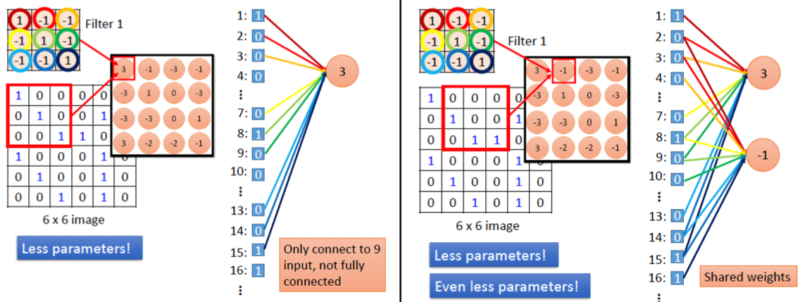
Figure 5: CNN原理
而CNN則是透過卷積核(kernel, 即圖5中的filter)對整張圖做卷積，部份的保留了圖片的空間特徵，同時也減少了參數數量。
- 需要大量記憶體:
在處理 256x256 大小的彩色圖片時，會需要用到 256 * 256 * 3 =196,608 個 Input Neuron，如果中間的隱藏層有 1000 個 Neuron，每個神經元需要一個浮點數的權重值 (8 bytes)，那麼總共需要 196,608 * 1001 * 8 = 1.47 GB 的記憶體才夠。更何況這還只是個簡單的模型。 - 多層感知器只針對圖片中每個單一像素去作判斷，完全捨棄重要的影像特徵。人類在判斷所看到的物體時，會從不同部位的特徵先作個別判斷，例如當你看到一架飛機，會先從機翼、機鼻、機艙體等這些特徵，再跟記憶中的印象來判斷是否為一架飛機，甚至再進一步判斷為客機還是戰鬥機。但是多層感知器沒有利用這些特徵，所以在影像的判讀上準確率就沒有接下來要討論的 CNN 來得好。

Figure 6: DNN神經網路架構

Figure 7: CNN架構
與 DNN 相比，CNN多了卷積層與池化層，卷積層用來強調圖案(資料)特徵，池化層則可以縮減取樣，減少 overfitting 問題。二者的比較如下圖4所示：
Figure 8: DNN v.s. CNN
1.2. 卷積運算
想具體的了解卷積核的功能，可以先到這裡來體驗一下。
在神經網路中，我們曾經提出如下的卷積運算例子：
經由如下的矩陣計算，我們可以初步擬定一條分類規則：若是運算所得值大於0，則此圖像為＼；若是運算所得值小於0，則判定為／。
在上述範例中：
- 矩陣K對矩陣A、B所進行的運算即為卷積(convolution)，矩陣K在卷積神經網路中稱之為卷積核(convolution kernel)，其作用即在於萃取出資料特徵。藉此，我們達成了利用數學運算來擷取圖像特徵，也可以理解到為何深度學習能夠過濾資料雜訊而完成圖像識別。
- 計算得到結果後，我們私自擬定一條分類規則：若是運算所得值大於0，則此圖像為＼；若是運算所得值小於0，則判定為／。在神經網路中，這就是激勵函數(Activation Function)。

以全連接層來處理神經網路的問題在於：全連接層會忽略資料的「形狀」。例如，假設輸入資料為影像，則通常會包含水平、垂直、色版方向的三維形狀，然而當這些資料輸入全連接層時，三維資料就必須變為平面（一維資料），如前述的 MNist 資料集，輸入為(1, 28, 28)，即，一種顏色、28*28 像素，輸入全連接層後會變成一行的 784 個資料。
三維形狀的影像包含了許多重要的空間資料，例如，類似的空間有著相似的象素值、RGB 各色版間有緊密連接的關連性，距離較遠的像素彼此沒有關連…等特質，這些特質會在全連接層中被忽略掉。卷積層（Convolution layer）則能維持這些形狀，我們把 CNN 的卷積層輸出入資料稱作特徵圖（input / output feature map），而在卷積層中執行的處理則稱為卷積運算，若以影像處理來比喻卷積運算，則相當於「濾鏡效果」。卷積層的意義即是將原本一個影像經由卷積運算產生多個影像，每個影像均代表不同特徵。卷積運算方式如下：
典型的卷積運算如圖9，此處特徵圖為(4,4)，濾鏡為(3,3)，輸出為(2,2)，這裡所謂的濾鏡就是CNN中的卷積核(convolution kernel)，其初始值由隨機方式產生。此外，在全連接網路層中，除了權重參數(weight)之外，還有偏權值(bias)，其結果如圖10。
Figure 9: 卷積運算

Figure 10: 卷積運算 2
由圖9、10的卷積運算可以看出，輸入特徵值在經過運算後，其大小會縮小，可以預見的結果是，在經過多層神經網路反複進行卷積運算後，輸出特徵值大小很快就會縮小為 1，而無法再進行卷積運算。為了避免這種情況發生，在進行卷積運算前，可以針對輸入資料周圍補上一圈固定的資料（例如 0），這個動作稱為填補(padding)，如果我們對在卷積運算前對於圖9中的輸入特徵值進行寬度 1 的填補，則其結果如圖11所示。

Figure 11: 卷積運算 3
進行上述卷積運算時，每次自左而右、自上而下，自輸入特徵值取出一個與核大小相同的子矩陣與核進行運算，而每個取出的子矩陣的間隔稱為步幅(stride)，上述範例中的stride均為 1，若 stride 設為 2，則一個(7,7)的輸入特徵值與一個(3,3)的核進行運算後，其輸出特徵值大小只剩(3,3)。
上述範例中的特徵值均為二維矩陣，亦即，僅能表示水平與垂直方向的單色點陣圖，若輸入中包含色彩資料(RGB)，則輸入特徵圖將升及為三維矩陣（三層二維矩陣，每層表示一種 RGB 值），核的結構也是三維矩陣，但輸出特徵值則為二維矩陣。 以 MNist 資料集為例，將數字 7 的 28*28 影像以隨機產生的 5*5 濾鏡(或稱 filter weight、kernel)對其進行卷積，其結果如圖12所示，這種效果有助於提取輸入影像的不同特徵，例如邊緣、線條…等。
Figure 12: 卷積運算 4
實際建構模型時，不會只進行單一 kenrel 的卷積，圖13即是隨機產生 16 個 kernel 對輸入影像提取不同特徵。

Figure 13: 卷積運算 5
全連接層(又稱密集層, dense layer)和卷積層之間的根本區別在於：全連接層會由輸入的特徵空間中學習全域的 pattern，而卷積層則是學習局部的 pattern。以影像辨識為例，卷積層會把輸入分解成小小的 2D 窗格，然後從中找出 pattern。這個關鍵特性為 CNN 提供了兩個有趣的特質：
- 學習到的 pattern 具平移不變性(translation invariant)：在影像的右下角學習到的某個 pattern，CNN 可以在任何位置識別這樣的 pattern(如左上角)，相對的，當全連接層連接神經網路看到 pattern 出現在新位置時，就必須重新學習，這使的 CNN 可以更有效率地處理影像資料。
- 學習到 pattern 的空間層次結構(spatial hierarchies of patterns)：第一層卷積層會學習到諸如邊邊角角的小局部圖案，第二層卷積層則會基於第一層學到的特徵(小圖案)來學習較大的圖案，這使得 CNN 能夠有效地學習越來越複雜和抽象的視覺概念。
CNN 所運算的 3D 張量稱為特徵映射圖(feature maps，簡稱特徵圖)，特徵圖有 2 個空間軸(height, width)以及 1 個色深度軸(depth / channel)，對於 RGB 影像來說，depth 值為 3。卷積運算會從輸入特徵中萃取出各種小區塊 pattern，當它對整張影像都做完萃取之後，就會產生輸出特徵映射圖(output feature map)。輸出特徵映射圖仍是 3D 張量，具有寬度和高度，但此時其深度軸已不再代表 RGB 顏色值，此時它代表過濾器(filter)，每一種 filter 會對輸入資料進行特定面向的編碼、萃取出結果，例如，filter 可以萃取到「在輸入資料中出現一張臉」這種高階抽象的概念，將不是臉的都過濾掉。
1.3. 池化層(Pooling Layer)
卷積層之間通常會加一個池化層(Pooling Layer)，它是一個壓縮圖片並保留重要資訊的方法，取樣的方法一樣是採滑動視窗，但是通常取最大值(Max-Pooling)，而非加權總和，若滑動視窗大小設為 2，『滑動步長』(Stride) 也為 2，則資料量就降為原本的四分之一，但因為取最大值，它還是保留局部範圍比對的最大可能性。也就是說，池化後的資訊更專注於圖片中是否存在相符的特徵，而非圖片中『哪裡』存在這些特徵，幫助 CNN 判斷圖片中是否包含某項特徵，而不必關心特徵所在的位置，這樣圖像偏移，一樣可以辨識出來。其架構如圖14所示。5

Figure 14: CNN 之池化層
池化層以縮減取樣(downsampling)的方式縮小影像可以帶來以下優點：
- 減少需要處理的資料點：減少後續運算所需時間。
- 讓影像位置差異變小：影像要辨識的目標（如 MNist 資料集的數字）可能因為在影像中的位置不同而影響辦識，減小影像可以讓數字的位置差異變小。
- 參數的數量程計算量下降：同時也能控制 overfitting。
圖15即為使用 Max-Pool 對 16 個卷積影像進行縮減取樣(downsampling)的效果，將 16 個 28*28 個影像縮小為 16 個 14*14 的影像，但仍保持其特徵。MaxPooling 主要是由輸入特徵圖中做採樣並輸出樣本的最大值，它在概念上類似於卷積層操作，但並不是用卷積核(convolution kernel)張量積的方式來轉換局部區塊，而是經由手動編碼的 max 張量操作進行轉換。與卷積層操作的很大區別是 MaxPooling 通常用 2×2 窗格和步長(strides)2 來完成，以便將特徵圖每一軸的採樣減少到原來的 1/2，而卷積層操作通常使用 3×3 窗格且不指定步長(即使用預設步長 1)。

Figure 15: 池化效果
為什麼要採用這種方式來縮小採樣特徵圖而不用原來的特徵圖尺寸一路執行下去？假設一個有不加入 MaxPooling 而是以全卷積層的模型設計如下：
1: model_no_max_pool = models.Sequential() 2: model_no_max_pool.add(layers.Conv2D(32, (3, 3), activation='relu'), 3: input_shape=(28, 28, 1)) 4: model_no_max_pool.add(layers.Conv2D(64, (3, 3), activation='relu'),) 5: model_no_max_pool.add(layers.Conv2D(64, (3, 3), activation='relu'),)
上述設計的問題可以從以下兩個面向來看：6
- 不利於學習特徵的空間層次結構。當 strides=1，第二層的 3×3 窗格要走過 5×5 的區域才能包含第一層的 7×7 區城，進而生成下一層的完整 3×3 區域，依此類推，第三層的 3×3 窗格也要走過 5×5 的區域才能包含第二層的 5×5 區域。也就是說，第三層的 3×3 窗格實際上僅包含來自原始輸入的 7×7 區城的資訊。相對於初始輸入，由卷積神經網路學習的高階 pattern 仍然進展很小，不足以學習分類數字。我們希望的是：最後一個卷積層的輸出特徵已經能提供有關輸入資料的總體訊息。
- 最終特徵圖的每個樣本總係數為 22×22×64=3-976，這是相當巨大的 model，如果要將其展平以在頂部連接大小為 512 的 Dense 層，則該層將會有 1580 萬個參數，這對小 model 而言實在是太大，而且會導致 overfitting。
雖然 MaxPooling 並不是縮小探樣特徵圖的唯一方法（也可以透過卷積層的 strides 來調整，或是使用平均池化而非 MaxPooling）,不過就經驗來看，MaxPooling 往往比這些方案好。主要原因是：特徵通常是源自於空間某些有特色的 pattern，因此要取其最大值才更具訊息性，若採用平均值，則特色就被掩蓋了。
2. 神經網路解題步驟
使用神經網路解決問題可大致分為兩個步驟：「學習」與「推論」。
- 學習指使用訓練資料進行權重參數的學習
- 推論指使用學習過的參數進行資料分類CNN
而實際的動手實作可再細分為以下幾個步驟
- 收集資料 (Gathering data)
- 準備數據 (Preparing that data)
- 選擇模型 (Choosing a model)
- 訓練機器 (Training)
- 評估分析 (Evaluation)
- 調整參數 (Hyperparameter tuning)
- 預測推論 (Prediction)
實際動手玩一下神經網路架構: Tensorflow Playground
2.1. 收集資料
2.1.1. 資料類型
2.1.1.1. 人工收集
- 預測股市股價: 開盤、收盤、成交量、技術指標、財務指標、籌碼指標等等
- 以物品識別:大量物品照片並給予名稱(label)
- 以注音符號手寫辨識: 大量手寫照片及其對應答案(label)
2.1.1.2. 現成資料集
- MNIST
資料集由 0~9 的數字影像構成(如圖16)，共計 60000 張訓練影像、10000 張測試影像。

Figure 16: MNIST 資料集內容範例
- Boston housing
Boston Housing數據集包含有關波士頓不同房屋的數據(數據，如年份、面積)，本資料集中有506個樣本和13個特徵變量，目標是使用給定的特徵預測房屋價格的價值。
- Iris
鳶尾花資料集是非常著名的生物資訊資料集之一，由英國統計學家 Ronald Fisher 在1936年時，對加斯帕半島上的鳶尾屬花朵所提取的花瓣花萼的長寬數據資料，依照山鳶尾，變色鳶尾，維吉尼亞鳶尾三類進行標示，共150筆資料7。每筆資料有五個欄位：花萼長度(Sepal Length)、花萼寬度(Sepal Width)、花瓣長度(Petal Length) 、花瓣寬度(Petal Width)、類別(Class)，其中類有Setosa，Versicolor和Virginica三個品種。

Figure 17: Iris資料集
- Cifar-10
由深度學習大師 Geoffrey Hinton 教授與其在加拿大多倫多大學的學生 Alex Krixhevsky 與 Vinoid Nair 所整理之影像資料集, 包含 6 萬筆 32*32 低解析度之彩色圖片, 其中 5 萬筆為訓練集; 1 萬筆為測試集, 是機器學習中常用的圖片辨識資料集
Figure 18: Cifar-10
2.1.2. DEMO
以keras為例，我們可以利用mnist.load_data()自網路下載手寫辨識資料集，資料集內容包含 資料(x) 和 標籤(y) 兩部份，load_data()這個function會把整份資料集分割成兩個子集合：訓練集(training set)和測試集(testing set)。
1: from keras.datasets import mnist 2: (X_train, y_Train), (x_test, y_Test) = mnist.load_data()
2.2. 準備數據
當我們在比較分析兩組數據資料時，可能會遭遇因單位的不同(例如：身高與體重)，或數字大小的代表性不同(例如：粉專1萬人與滿足感0.8)，造成各自變化的程度不一，進而影響統計分析的結果8，即：那些變化量最大的因素（特徵）會主導分析結果。
正式將資料送至模型訓練前，資料應進行相應的缺漏值處理以及資料正規化，詳細處理方式可參考資料預處理。
2.2.1. DEMO範例
1: x_train = x_train.reshape(60000, 784) 2: x_test = x_test.reshape(10000, 784) 3: x_train = x_train.astype('float32') 4: x_test = x_test.astype('float32') 5: x_train /= 255 6: x_test /= 255 7: 8: y_TrainOneHot = np_utils.to_categorical(y_Train) 9: y_TestOneHot = np_utils.to_categorical(y_Test)
2.3. 選擇模型
整理完資料集後，接下來就是要選擇訓練用的模型，像是決策樹、LSTM、RNN等等都是機器學習中常使用的訓練模型，其中目前較常拿來訓練股市的是「LSTM」，中文叫做長短期記憶，是屬於深度學習中的一個模型。另一種CNN模型則適合處理圖形資料。
2.3.2. DEMO
2.3.2.1. CNN模型示例
1: model = Sequential() 2: model.add(Conv2D(32, (3, 3), padding="same", activation="relu")) 3: model.add(MaxPooling2D(pool_size=(2, 2))) 4: model.add(Conv2D(64, (3, 3), padding="same", activation="relu")) 5: model.add(MaxPooling2D(pool_size=(2, 2))) 6: model.add(Conv2D(128, (3, 3), padding="same", activation="relu")) 7: model.add(MaxPooling2D(pool_size=(2, 2))) 8: model.add(Activation("softmax")) 9: model.add(Dense(units=128, 10: input_dim=784, 11: kernel_initializer='normal', 12: activation='relu')) 13: model.add(Dense(64, activation='relu') 14: model.add(Dense(units=10, 15: kernel_initializer='normal', 16: activation='softmax'))

Figure 19: MNIST-NeuralNet
2.3.2.2. LSTM模型示例
1: model = Sequential() 2: model.add(LSTM(128, 3: input_shape=(x_train.shape[1:]), 4: activation='relu', 5: return_sequences=True)) 6: model.add(Dropout(0.2)) 7: model.add(LSTM(128, activation='relu')) 8: model.add(Dropout(0.1)) 9: model.add(Dense(32, activation='relu')) 10: model.add(Dropout(0.2)) 11: model.add(Dense(10, activation='softmax'))
2.4. 訓練機器
選擇好訓練模型後，再來要將訓練集資料丟進去模型中做訓練，每層要放多少神經元、要跑幾層等等都會影響模型訓練出來的結果，這部分只能靠經驗跟不斷嘗試去學習，或是上網多爬文看別人怎麼撰寫訓練模型。
在真正訓練前應該再設定好模型的loss function, optimizer。
2.4.2. DEMO
2.4.2.1. CNN
1: # optimizer, loss function 2: model.compile(loss='categorical_crossentropy', 3: optimizer='adam', metrics=['accuracy']) 4: 5: model.fit(x=x_Train, 6: y=y_TrainOneHot, 7: validation_split=0.2, 8: epochs=5, batch_size=30, verbose=2)
2.4.2.2. LSTM
1: # ptimizer, loss function 2: model.compile(optimizer=Adam(lr=0.001), 3: loss='categorical_crossentropy', 4: metrics=['accuracy']) 5: 6: model.fit(x_train, y_train, 7: e pochs=3, 8: validation_data=(x_test, y_test))
2.5. 評估分析
當模型訓練完成後，接下來就是判斷該模型是否有過度擬合(overfitting)，這裡就是帶入測試集的資料進行評估，也可以嘗試利用交叉驗證的方式進行模型的擬合性判斷，以及利用RESM、MSE等統計計算來判斷模型的準確度
1: scores = model.evaluate(x_Train, y_TestOneHot)
2.6. 調整參數
到這大致上模型已經完成了50%，最後的一步就是進行參數的微調，我們也稱為「超參數 (Hyperparamters)」，讓整個模型更加的精準，但也不能過度的調整，因為會造成overfitting的結果，這個取捨就只能依照無窮盡的反覆迭帶去尋找了，這部分也是相對較耗時間的地方
2.6.1. model參數
- 調整model架構: [機器學習 ML NOTE] CNN演化史(AlexNet、VGG、Inception、ResNet)+Keras Coding
- loss function: https://keras.io/api/losses/
- optimizers: https://keras.io/api/optimizers/
2.6.2. Hyperparameters
- batch size：一次迭代放入進行訓練或測試的影像數量。
- epoch：一種單位，所有影像皆被計算過1次後即為1 epoch
- CNN筆記 - 超參數 (Hyperparamters)
2.7. 預測推論
到此，模型已經正式完成。那，怎麼知道這個模型夠不夠優秀？能不能正常運作？最簡單的評估方式是以一筆新的資料來測試。
1: prediction = model.predict_classes(x_Test4D_normalize) 2: print(prediction[:10])
以MNIST手寫數字辨識為例，我們可以自已寫一個數字餵給模型，看看模型是否能正確預測。
對於模型來說，這類全新的數據則是一個未知數，如果我們在訓練與測試階段都用同一批資料，這就好像上課與考試的內容都一樣，這會導致學生其實沒有學到真正的知識，而考試得到的分數也不會太準確。這種訓練資料與測試資料過於雷同而導致模型對新型別的資料欠缺處理能力的問題即為 過度擬合(overfitting) ；反之，如果我們的模型對於各種新型態資料都能辨識，則這個模型就具有 泛化（Generalization） 的預測能力。
3. 實作1
4. 實作2: MNIST
4.1. MNIST資料集
- MNIST 是機器學習領域中相當著名的資料集，號稱機器學習領域的「Hello world.」，其重要性不言可喻。
- MNIST 資料集由 0~9 的數字影像構成(如圖16)，共計 60000 張訓練影像、10000 張測試影像。
- 一般的 MMIST 資料集的用法為：使用訓練影像進行學習，再利用學習後的模型預測能否正確分類測試影像。
準備資料是訓練模型的第一步，基礎資料可以是網上公開的資料集，也可以是自己的資料集。視覺、語音、語言等各種型別的資料在網上都能找到相應的資料集。
4.2. 準備 MNIST 資料
MNIST 數據集來自美國國家標準與技術研究所, National Institute of Standards and Technology (NIST). 訓練集 (training set) 由來自 250 個不同人手寫的數字構成, 其中 50% 是高中學生, 50% 來自人口普查局 (the Census Bureau) 的工作人員. 測試集(test set) 也是同樣比例的手寫數字數據。MNIST 數據集可在 http://yann.lecun.com/exdb/mnist/ 獲取, 它包含了四個部分:
- Training set images: train-images-idx3-ubyte.gz (9.9 MB, 解壓後 47 MB, 包含 60,000 個樣本)
- Training set labels: train-labels-idx1-ubyte.gz (29 KB, 解壓後 60 KB, 包含 60,000 個標籤)
- Test set images: t10k-images-idx3-ubyte.gz (1.6 MB, 解壓後 7.8 MB, 包含 10,000 個樣本)
- Test set labels: t10k-labels-idx1-ubyte.gz (5KB, 解壓後 10 KB, 包含 10,000 個標籤)
雖然自己手動下載是個不錯的主意，可以讓你練習如何從網路抓檔案、解壓、設定這些檔案的下載路徑、然後再讀進來變成numpy的array或是pandas的dataframe，再把這些資料餵給tensorflow模組去建模型…..不過這對初學者來說著實是一件很麻煩的事，所以多數的套件都很貼心的幫你準備好了直接從網路抓下資料集的function，像tensorflow的load_data。
4.2.1. load data
MNIST 資料集是一個適合拿來當作 TensotFlow 的練習素材，在 Tensorflow 的現有套件中，也已經有內建好的 MNIST 資料集，我們只要在安裝好 TensorFlow 的 Python 環境中執行以下程式碼，即可將 MNIST 資料成功讀取進來。
1: import tensorflow as tf 2: mnist = tf.keras.datasets.mnist 3: (x_train, y_train), (x_test, y_test) = mnist.load_data() 4: print(x_train.shape)
(60000, 28, 28)
在訓練模型之前，需要將樣本資料劃分為訓練集、測試集，有些情況下還會劃分為訓練集、測試集、驗證集。由上述程式第3行可知，下載後的 MNIST 資料分成訓練資料(training data)與測試資料(testing data)，其中 x 為圖片、y為所對應數字。
1: # 判斷資料形狀 2: print(x_train.shape) 3: print(x_test.shape) 4: # 第一個label的內容 5: print(y_train[0]) 6: # 顯示影像內容 7: import matplotlib.pylab as plt 8: img = x_train[0] 9: plt.imshow(img) 10: plt.savefig("MNIST-Image.png")
(60000, 28, 28) (10000, 28, 28) 5
由上述程式輸出結果可以看到載入的 x 為大小為 28*28 的圖片共 60000 張，每一筆 MNIST 資料的照片(x)由 784 個 pixels 組成（28*28），照片內容如圖20，訓練集的標籤(y)則為其對應的數字(0～9)，此例為 5。
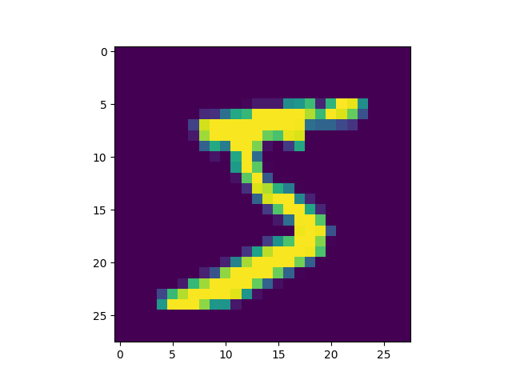
Figure 20: MNIST 影像示例
x 的影像資料為灰階影像，每個像素的數值介於 0~255 之間，矩陣裡每一項的資料則是代表每個 pixel 顏色深淺的數值，如下圖21所示：
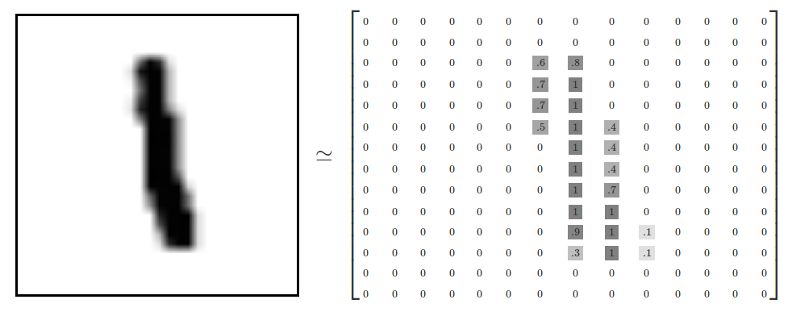
Figure 21: MNIST 資料矩陣
4.2.2. 資料預處理
4.2.2.1. 影像數值資料的正規化
此例中每張圖被存成28X28個0~255的數值，分別代表影像中每個點(pixel)的灰階深度，在把影像丟進模型前，最好先將數值資料做正規化或標準化，讓數值都變為介於0到1間的數值。
以此狀況為例，把所有的數值除上255是個不錯的解決方案。
1: print("====第0張圖的第七列原始內容===") 2: print(x_train[0][7]) 3: 4: X_train = x_train / 255 5: X_test = x_test / 255 6: 7: print("====第0張圖的第七列正規化後的內容===") 8: print(X_train[0][7])
====第0張圖的第七列原始內容=== [ 0 0 0 0 0 0 0 49 238 253 253 253 253 253 253 253 253 251 93 82 82 56 39 0 0 0 0 0] ====第0張圖的第七列正規化後的內容=== [0. 0. 0. 0. 0. 0. 0. 0.19215686 0.93333333 0.99215686 0.99215686 0.99215686 0.99215686 0.99215686 0.99215686 0.99215686 0.99215686 0.98431373 0.36470588 0.32156863 0.32156863 0.21960784 0.15294118 0. 0. 0. 0. 0. ]
4.2.2.2. Label的格式轉換
載入的 y 為所對應的數字 0~9，在這我們要運用 keras 中的 np_under_utils.to_under_categorical 將 y 轉成 one-hot 的形式，將他轉為一個 10 維的 vector，例如：我們所拿到的資料為 y=3，經過 np_utils.to_categorical，會轉換為 y=[0,0,0,1,0,0,0,0,0,0]。這部份的轉換程式碼如下：
1: # 將y轉換成one-hot encoding 2: from tensorflow.keras.utils import to_categorical 3: 4: print(y_train[0]) 5: Y_train = to_categorical(y_train, 10) 6: Y_test = to_categorical(y_test, 10) 7: # 回傳處理完的資料 8: print(y_Train[0])
5 [0. 0. 0. 0. 0. 1. 0. 0. 0. 0.]
結果可以看出第0張圖的label為5，表示這張圖不管寫的好或不好，像或不像，其真正的答案為5。
4.3. 建立CNN模型
- 在這個模型中，第一層(同時也身兼輸入層)有32個卷積核，也就是有32個神經元
- 第一層的每個神經元有10個參數\(3*3+1\)，因為卷積核大小為\(3*3\)，還有一個bias
1: from keras import layers 2: from keras import models 3: model = models.Sequential() 4: model.add(layers.Conv2D(32, (3, 3), activation='relu', input_shape=(28, 28, 1))) 5: model.add(layers.MaxPooling2D((2, 2))) 6: model.add(layers.Conv2D(64, (3, 3), activation='relu')) 7: model.add(layers.MaxPooling2D((2, 2))) 8: model.add(layers.Flatten()) 9: model.add(layers.Dense(512, activation='relu')) 10: model.add(layers.Dense(10, activation='softmax')) 11: model.summary() # 查看模型摘要
Model: "sequential_18" _________________________________________________________________ Layer (type) Output Shape Param # ================================================================= conv2d_32 (Conv2D) (None, 26, 26, 32) 320 max_pooling2d_25 (MaxPooli (None, 13, 13, 32) 0 ng2D) conv2d_33 (Conv2D) (None, 11, 11, 64) 18496 max_pooling2d_26 (MaxPooli (None, 5, 5, 64) 0 ng2D) flatten_7 (Flatten) (None, 1600) 0 dense_26 (Dense) (None, 512) 819712 dense_27 (Dense) (None, 10) 5130 ================================================================= Total params: 843658 (3.22 MB) Trainable params: 843658 (3.22 MB) Non-trainable params: 0 (0.00 Byte) _________________________________________________________________
在編譯時，以adim優化器，由於使用 softmax 單元結束神經網路，所以配合使用 categorical_crossentropy 為損失基準。
1: model.compile(loss='categorical_crossentropy', 2: optimizer='adam', 3: metrics=['accuracy'])
4.4. 訓練CNN模型
1: import os 2: os.environ['TF_CPP_MIN_LOG_LEVEL'] = '2' # 设置 Tensorflow 日志级别为 ERROR 3: 4: history = model.fit(X_train, Y_train, # 训练数据和标签 5: batch_size=128, # 批次大小 6: epochs=10, # 训练轮数 7: validation_split=0.2) # 验证集比例（可选）
Epoch 1/10 375/375 [==============================] - 7s 18ms/step - loss: 0.0074 - accuracy: 0.9973 - val_loss: 0.0429 - val_accuracy: 0.9900 Epoch 2/10 375/375 [==============================] - 7s 19ms/step - loss: 0.0039 - accuracy: 0.9988 - val_loss: 0.0458 - val_accuracy: 0.9904 Epoch 3/10 375/375 [==============================] - 7s 19ms/step - loss: 0.0044 - accuracy: 0.9986 - val_loss: 0.0543 - val_accuracy: 0.9887 Epoch 4/10 375/375 [==============================] - 7s 19ms/step - loss: 0.0055 - accuracy: 0.9978 - val_loss: 0.0456 - val_accuracy: 0.9905 Epoch 5/10 375/375 [==============================] - 7s 19ms/step - loss: 0.0020 - accuracy: 0.9993 - val_loss: 0.0428 - val_accuracy: 0.9911 Epoch 6/10 375/375 [==============================] - 7s 19ms/step - loss: 9.6022e-04 - accuracy: 0.9997 - val_loss: 0.0503 - val_accuracy: 0.9912 Epoch 7/10 375/375 [==============================] - 7s 19ms/step - loss: 1.9383e-04 - accuracy: 1.0000 - val_loss: 0.0471 - val_accuracy: 0.9917 Epoch 8/10 375/375 [==============================] - 8s 21ms/step - loss: 4.2269e-05 - accuracy: 1.0000 - val_loss: 0.0484 - val_accuracy: 0.9922 Epoch 9/10 375/375 [==============================] - 8s 20ms/step - loss: 3.1525e-05 - accuracy: 1.0000 - val_loss: 0.0490 - val_accuracy: 0.9924 Epoch 10/10 375/375 [==============================] - 7s 20ms/step - loss: 1.5961e-05 - accuracy: 1.0000 - val_loss: 0.0504 - val_accuracy: 0.9923
4.5. 評估CNN模型
1: # 在测试数据上评估模型 2: loss, accuracy = model.evaluate(X_test, Y_test) 3: print('Test loss:', loss) 4: print('Test accuracy:', accuracy) 5: 6: import matplotlib.pyplot as plt 7: 8: # 获取训练历史中的损失值和准确率值 9: train_loss = history.history['loss'] 10: val_loss = history.history['val_loss'] 11: train_accuracy = history.history['accuracy'] 12: val_accuracy = history.history['val_accuracy'] 13: 14: # 绘制损失值折线图 15: plt.cla() 16: plt.plot(train_loss, label='Training Loss') 17: plt.plot(val_loss, label='Validation Loss') 18: plt.title('Training and Validation Loss') 19: plt.xlabel('Epoch') 20: plt.ylabel('Loss') 21: plt.legend() 22: plt.savefig('images/cnn-mnist-Loss.png', dpi=300) 23: 24: # 绘制准确率折线图 25: plt.cla() 26: plt.plot(train_accuracy, label='Training Accuracy') 27: plt.plot(val_accuracy, label='Validation Accuracy') 28: plt.title('Training and Validation Accuracy') 29: plt.xlabel('Epoch') 30: plt.ylabel('Accuracy') 31: plt.legend() 32: plt.savefig('images/cnn-mnist-Accuracy.png', dpi=300)
313/313 [==============================] - 1s 4ms/step - loss: 0.0358 - accuracy: 0.9929 Test loss: 0.03584390878677368 Test accuracy: 0.992900013923645

Figure 22: Training and Validation Loss
Figure 23: Training and Validation Accuracy
4.6. 預測結果
1: # 使用模型进行预测 2: predictions = model.predict(x_test) 3: 4: # 輸出前10個樣本的预测结果 5: for i in range(10): 6: print("Predicted:", predictions[i].argmax(), "Actual:", Y_test[i].argmax())
313/313 [==============================] - 1s 4ms/step Predicted: 7 Actual: 7 Predicted: 2 Actual: 2 Predicted: 1 Actual: 1 Predicted: 0 Actual: 0 Predicted: 4 Actual: 4 Predicted: 1 Actual: 1 Predicted: 4 Actual: 4 Predicted: 9 Actual: 9 Predicted: 6 Actual: 5 Predicted: 9 Actual: 9
4.7. Crosstab
1: import pandas as pd 2: 3: # 假设 predictions 和 y_test 是模型预测结果和实际标签 4: # 假设 predictions 和 y_test 都是一维数组，每個元素是樣本对应的类别标签 5: 6: # 将预测结果和实际标签转换为 Pandas Series 7: predicted_labels = pd.Series(predictions.argmax(axis=1), name='Predicted') 8: actual_labels = pd.Series(Y_test.argmax(axis=1), name='Actual') 9: 10: # 使用 pd.crosstab 计算交叉表 11: crosstab_result = pd.crosstab(actual_labels, predicted_labels) 12: 13: # 輸出交叉表 14: print(crosstab_result)
Predicted 0 1 2 3 4 5 6 7 8 9 Actual 0 977 0 0 0 1 0 0 1 1 0 1 0 1128 1 1 0 1 1 0 3 0 2 1 1 1026 0 0 0 0 4 0 0 3 0 0 1 1004 0 3 0 0 2 0 4 0 0 0 0 979 0 0 0 1 2 5 2 0 1 9 0 873 3 1 3 0 6 2 2 0 0 3 1 948 0 2 0 7 0 0 3 0 0 0 0 1021 1 3 8 2 0 1 0 0 0 0 2 968 1 9 0 0 0 1 8 2 0 0 3 995
5. 實作3: Regression
CNN雖然更多場合是用於處理影像相關的處理工作，然而他也可以用來幫我們解決一些數學問題，例如畫迴歸線。開啟colab、新增一個筆記本，逐一將下列程式碼複製、貼到colab執行，觀察結果。
5.1. 產生數據
1: import matplotlib.pyplot as plt 2: import numpy as np 3: 4: x = np.random.uniform(0.0, 3, (10)) 5: y = 78 + 7.8*x + np.random.normal(0.0, 3, len(x)) 6: print('x: ', x) 7: print('y: ', y) 8: 9: plt.scatter(x, y)
x: [1.04495966 2.63828713 1.05394772 ... 2.7829483 2.5038085 0.7773407 ] y: [ 85.07647921 96.21107688 90.60605344 ... 97.41007778 102.38380208 80.86243195]
結果如下圖，一共有10個點，如何畫出一條迴歸線代表這10個點的趨勢？這個題目本身是什麼意思？

Figure 24: Caption
想像一下，上面是10個學生的資料，X軸是學生對於數學的喜愛程度，Y軸是該生的數學期末考成績，看起來二者間是存在某種關係的。那，如果已知某生對數學的喜愛程為2.0，我們可以預測他的數學期末考成績嗎？—可以的，如果我們有一條像底下的迴歸線公式：
\[ MathScore_i = a * MathLove_i + b \]
如此一來，我們就能輸入喜愛程度，得到對數學成績的預測結果。
當樣本數不太多，而你的計算能力也不弱時，也許你可以手動將上述公式中的a與b求出，得到一條 \(y=ax+b\) 的迴歸線，但萬一樣本數有2000個點呢(如圖25)?
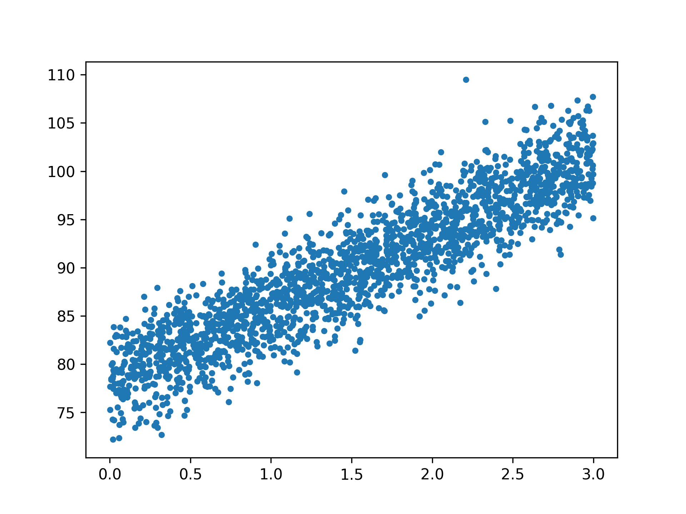
Figure 25: 2000個資料點
接下來我們想建一個CNN模型來幫我們畫一條迴歸線。
5.2. scikit learn的線性迴歸模組
1: from sklearn import linear_model 2: regr=linear_model.LinearRegression() 3: 4: x = x.reshape(-1, 1) 5: # 改變x的格式形狀， 6: # 原本x為 [x1, x2, x3, ...] 7: # 要改格式符合scikit learn迴歸模組的需求，變成: [ [x1], [x2], [x3], ...] 8: y = y.reshape(-1, 1) 9: regr.fit(x, y) 10: 11: #短短兩行code，模型已經建構完成了! 接下來，我們來看看訓練集的成果。 12: plt.clf() 13: plt.scatter(x, y, s=10) 14: plt.plot(x, regr.predict(x), color='red', linewidth=4) 15: print("====實際(前三筆)====") 16: print(y[:3]) 17: print("====預測(前三筆)====") 18: print(regr.predict(x[:3]))
====實際(前三筆)==== [[85.07647921] [96.21107688] [90.60605344]] ====預測(前三筆)==== [[86.09718013] [98.58801576] [86.16764168]]
Figure 26: Caption
5.3. 建立model來畫迴歸線
1: from keras.models import Sequential 2: from keras.layers import Dense 3: from keras.layers import Dropout 4: 5: # A simple regression model 6: model = Sequential() 7: model.add(Dense(4, input_shape=(1,))) 8: model.add(Dropout(0.5)) 9: model.add(Dense(8, input_shape=(1,))) 10: model.add(Dropout(0.5)) 11: model.add(Dense(1, input_shape=(1,))) 12: model.compile(loss='mse', optimizer='rmsprop') 13: print(model)
<keras.src.engine.sequential.Sequential object at 0x28b748ca0>
5.4. 訓練model
1: # 將實際資料分為訓練集與測試集 2: x_Train = x[:1500] 3: x_Test = x[1500:] 4: y_Train = y[:1500] 5: y_Test = y[1500:] 6: # The fit() method - trains the model 7: train_history = model.fit(x=x_Train, y=y_Train, 8: validation_split=0.2, 9: epochs=100, batch_size=200, 10: verbose=1) 11: print(train_history)
Epoch 1/100 6/6 [==============================] - 0s 6ms/step - loss: 2863.6062 - val_loss: 1743.6255 Epoch 2/100 ...略... Epoch 99/100 6/6 [==============================] - 0s 2ms/step - loss: 2085.9714 - val_loss: 656.8370 Epoch 100/100 6/6 [==============================] - 0s 2ms/step - loss: 2109.9709 - val_loss: 653.3618 <keras.src.callbacks.History object at 0x28c3e2b80>
5.5. 查看訓練過程
1: print(train_history.history) 2: print(train_history.history.keys()) 3: 4: import matplotlib.pyplot as plt 5: plt.cla() 6: plt.title('Train History') 7: plt.ylabel('loss') 8: plt.xlabel('Epoch') 9: plt.plot(train_history.history['loss']) 10: plt.plot(train_history.history['val_loss']) 11: #plt.show() 12: plt.savefig("images/cnn-regression-4.png", dpi=300)
{'loss': [2863.606201171875, 2763.04541015625, 2880.40478515625, 2777.246826171875, 2757.767822265625, 2793.475830078125, 2695.902099609375, 2780.853759765625, 2798.28662109375, 2807.108642578125, 2709.166748046875, 2592.2041015625, 2712.280517578125, 2761.0458984375, 2798.13427734375, 2561.240478515625, 2604.88623046875, 2587.8076171875, 2511.18505859375, 2582.03271484375, 2669.35595703125, 2598.029296875, 2667.6181640625, 2545.345703125, 2409.091552734375, 2577.706787109375, 2511.310791015625, 2462.844482421875, 2486.796875, 2600.557373046875, 2547.994140625, 2679.650634765625, 2535.125732421875, 2373.097412109375, 2493.5498046875, 2496.875732421875, 2429.0732421875, 2539.913818359375, 2375.737060546875, 2531.23193359375, 2364.086181640625, 2500.54638671875, 2466.4326171875, 2267.613525390625, 2501.35546875, 2486.72314453125, 2423.84326171875, 2494.4189453125, 2396.94580078125, 2485.988525390625, 2289.967529296875, 2407.2568359375, 2456.419677734375, 2434.612548828125, 2347.943115234375, 2332.21337890625, 2305.1826171875, 2243.403076171875, 2316.371337890625, 2303.15966796875, 2415.20751953125, 2330.21875, 2453.8359375, 2252.14794921875, 2296.7548828125, 2377.554931640625, 2240.637451171875, 2264.6640625, 2266.652587890625, 2216.469970703125, 2246.009521484375, 2368.211669921875, 2183.10546875, 2212.610107421875, 2208.70947265625, 2360.73583984375, 2349.56884765625, 2230.08740234375, 2123.85302734375, 2198.970947265625, 2208.628173828125, 2170.87646484375, 2142.40380859375, 2231.48828125, 2106.380126953125, 1994.4327392578125, 2083.111572265625, 2316.231201171875, 2183.566162109375, 2096.031005859375, 2137.7255859375, 2119.66162109375, 2163.564208984375, 2055.398681640625, 2071.734619140625, 2098.13671875, 2086.543701171875, 2050.818115234375, 2085.971435546875, 2109.970947265625], 'val_loss': [1743.62548828125, 1676.0625, 1622.7098388671875, 1554.9241943359375, 1505.2408447265625, 1452.3956298828125, 1383.53955078125, 1360.568115234375, 1328.6949462890625, 1292.880859375, 1256.500244140625, 1201.4288330078125, 1179.2587890625, 1171.0894775390625, 1154.2432861328125, 1125.0340576171875, 1108.9866943359375, 1087.2772216796875, 1055.875244140625, 1045.281005859375, 1036.374267578125, 1021.7939453125, 1022.4271850585938, 1018.1765747070312, 967.2241821289062, 982.8093872070312, 985.1171875, 956.1712646484375, 939.5418701171875, 927.49072265625, 924.7468872070312, 935.8602294921875, 952.6116943359375, 920.911865234375, 933.4141845703125, 919.3311157226562, 920.4298095703125, 908.8431396484375, 882.9320068359375, 881.1281127929688, 852.0545043945312, 875.4194946289062, 864.512939453125, 855.1522827148438, 862.8059692382812, 855.7294311523438, 853.6962280273438, 857.2517700195312, 849.6651000976562, 841.4896850585938, 861.3709106445312, 857.759521484375, 868.7303466796875, 859.9783325195312, 839.6546630859375, 845.3351440429688, 820.969970703125, 817.8179931640625, 798.3350219726562, 782.0546875, 787.7767944335938, 790.844970703125, 803.7584228515625, 790.1972045898438, 783.597900390625, 775.7128295898438, 777.0987548828125, 764.4354248046875, 746.651611328125, 732.0689086914062, 755.0868530273438, 757.199462890625, 754.501953125, 754.7967529296875, 722.3506469726562, 744.788818359375, 738.108154296875, 741.9891357421875, 734.1724243164062, 743.3819580078125, 718.5947875976562, 703.7750244140625, 681.1381225585938, 694.630859375, 690.3923950195312, 670.9759521484375, 656.1828002929688, 674.0592651367188, 698.1986083984375, 673.902099609375, 680.8800048828125, 687.5993041992188, 703.650634765625, 696.678955078125, 702.5635986328125, 689.4376831054688, 679.1995239257812, 664.786865234375, 656.8369750976562, 653.36181640625]}
dict_keys(['loss', 'val_loss'])
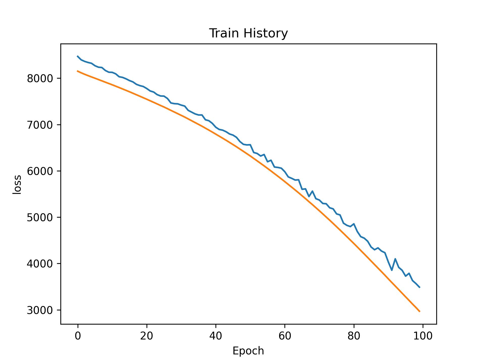
Figure 27: Caption
5.6. 評估model
1: # The evaluate() method - gets the loss statistics 2: score = model.evaluate(x_Test, y_Test, batch_size=200) 3: print(score)
3/3 [==============================] - 0s 990us/step - loss: 727.6573 727.6573486328125
5.7. 預測結果
1: # The predict() method - predict the outputs for the given inputs 2: print(y_Test[:5]) 3: print(model.predict(x_Test[:5]))
[[92.71580667] [80.35926946] [94.14913803] [80.94617382] [94.81639264]] 1/1 [==============================] - 0s 87ms/step [[74.310616] [49.009674] [75.51746 ] [54.195095] [68.86794 ]]
5.8. 調整model/參數
- model架構
- loss function
- optimizer
- hyper parameters
5.8.1. case #1
1: # A simple regression model 2: model = Sequential() 3: model.add(Dense(4, input_shape=(1,))) 4: model.add(Dense(8, input_shape=(1,))) 5: model.add(Dense(4, input_shape=(1,))) 6: model.add(Dense(1, input_shape=(1,))) 7: model.compile(loss='mean_squared_error', optimizer='rmsprop') 8: #mean_squared_logarithmic_error 9: #mean_absolute_percentage_error 10: train_history = model.fit(x=x_Train, y=y_Train, 11: validation_split=0.2, 12: epochs=100, batch_size=200, 13: verbose=0) 14: score = model.evaluate(x_Test, y_Test, batch_size=200) 15: print(score) 16: print(y_Test[:5]) 17: print(model.predict(x_Test[:5]))
3/3 [==============================] - 0s 769us/step - loss: 479.3994 479.3994140625 [[92.71580667] [80.35926946] [94.14913803] [80.94617382] [94.81639264]] 1/1 [==============================] - 0s 34ms/step [[101.1277 ] [ 54.4739 ] [103.35307] [ 64.03558] [ 91.09165]]
5.8.2. case #2
1: model = Sequential() 2: model.add(Dense(4, input_shape=(1,))) 3: model.add(Dense(8, input_shape=(1,))) 4: model.add(Dense(16, input_shape=(1,))) 5: model.add(Dense(32, input_shape=(1,))) 6: model.add(Dense(16, input_shape=(1,))) 7: model.add(Dense(4, input_shape=(1,))) 8: model.add(Dense(1, input_shape=(1,))) 9: model.compile(loss='mse', optimizer='rmsprop') 10: train_history = model.fit(x=x_Train, y=y_Train, 11: validation_split=0.2, 12: epochs=100, batch_size=200, 13: verbose=0) 14: score = model.evaluate(x_Test, y_Test, batch_size=200) 15: print(score) 16: print(y_Test[:5]) 17: print(model.predict(x_Test[:5]))
3/3 [==============================] - 0s 864us/step - loss: 14.2688 14.268836975097656 [[92.71580667] [80.35926946] [94.14913803] [80.94617382] [94.81639264]] 1/1 [==============================] - 0s 47ms/step [[97.211815] [84.07756 ] [97.83831 ] [86.76943 ] [94.386406]]
6. 實作4[回家踹]: Cifar-10
6.1. 資料集下載/預處理
回家執行：下載需要 一點 時間….
1: ### 1. Import Library 2: from keras.datasets import cifar10 3: import numpy as np 4: np.random.seed(10) 5: 6: ### 2. 資料準備 7: (x_img_train,y_label_train),(x_img_test,y_label_test) = cifar10.load_data() 8: x_img_train_normalize = x_img_train.astype('float32') / 255.0 9: x_img_test_normalize = x_img_test.astype('float32') / 255.0 10: '''正規化''' 11: from tensorflow.keras.utils import to_categorical 12: 13: y_label_train_OneHot = to_categorical(y_label_train) 14: y_label_test_OneHot = to_categorical(y_label_test)
6.2. 建模
1: ### 3. 建立模型 2: from keras import layers 3: from keras import models 4: '''卷積層1與池化層1''' 5: # 隨機產生32個3*3的濾鏡，輸入的影像為32*32*3(RGB) 6: model = models.Sequential() 7: 8: model.add(layers.Conv2D(filters=32,kernel_size=(3,3), input_shape=(32, 32, 3), 9: activation='relu', padding='same')) 10: model.add(layers.Dropout(rate=0.25)) # 每次訓練迭代時會隨機放棄25%的神經元 11: model.add(layers.Conv2D(filters=32, kernel_size=(3, 3), 12: activation='relu', padding='same')) 13: # 進行第一次縮減取樣，將影像縮為16*16 14: model.add(layers.MaxPooling2D(pool_size=(2, 2))) 15: '''卷積層2與池化層2''' 16: # 將前一層傳進的32個16*16影像轉為64個16*16影像 17: model.add(layers.Conv2D(filters=64, kernel_size=(3, 3), ### 產生64個影像 18: activation='relu', padding='same')) 19: model.add(layers.Dropout(0.25)) 20: model.add(layers.Conv2D(filters=64, kernel_size=(3, 3), 21: activation='relu', padding='same')) 22: # 再將64個16*16影像縮減取樣為8*8 23: model.add(layers.MaxPooling2D(pool_size=(2, 2))) 24: '''卷積層3與池化層3''' 25: # 將64個8*8個影像轉為128個 26: model.add(layers.Conv2D(filters=128, kernel_size=(3, 3), 27: activation='relu', padding='same')) 28: model.add(layers.Dropout(0.3)) 29: model.add(layers.Conv2D(filters=128, kernel_size=(3, 3), 30: activation='relu', padding='same')) 31: # 再將128個8*8影像縮減取樣為4*4 32: model.add(layers.MaxPooling2D(pool_size=(2, 2))) 33: '''建立神經網路(平坦層、隱藏層、輸出層)''' 34: # 將128*4*4的3維矩陣轉為1維(2048個float數字，對應到2048個神經元) 35: model.add(layers.Flatten()) 36: model.add(layers.Dropout(0.3)) 37: model.add(layers.Dense(2500, activation='relu')) ### 隠藏層1有2500個神經元 38: model.add(layers.Dropout(0.3)) 39: model.add(layers.Dense(1500, activation='relu')) ### 隠藏層2有1500神經元 40: model.add(layers.Dropout(0.3)) 41: model.add(layers.Dense(10, activation='softmax')) ### 10個label 42: print(model.summary())
Model: "sequential_5" _________________________________________________________________ Layer (type) Output Shape Param # ================================================================= conv2d_19 (Conv2D) (None, 32, 32, 32) 896 dropout_18 (Dropout) (None, 32, 32, 32) 0 conv2d_20 (Conv2D) (None, 32, 32, 32) 9248 max_pooling2d_9 (MaxPoolin (None, 16, 16, 32) 0 g2D) conv2d_21 (Conv2D) (None, 16, 16, 64) 18496 dropout_19 (Dropout) (None, 16, 16, 64) 0 conv2d_22 (Conv2D) (None, 16, 16, 64) 36928 max_pooling2d_10 (MaxPooli (None, 8, 8, 64) 0 ng2D) conv2d_23 (Conv2D) (None, 8, 8, 128) 73856 dropout_20 (Dropout) (None, 8, 8, 128) 0 conv2d_24 (Conv2D) (None, 8, 8, 128) 147584 max_pooling2d_11 (MaxPooli (None, 4, 4, 128) 0 ng2D) flatten_3 (Flatten) (None, 2048) 0 dropout_21 (Dropout) (None, 2048) 0 dense_9 (Dense) (None, 2500) 5122500 dropout_22 (Dropout) (None, 2500) 0 dense_10 (Dense) (None, 1500) 3751500 dropout_23 (Dropout) (None, 1500) 0 dense_11 (Dense) (None, 10) 15010 ================================================================= Total params: 9176018 (35.00 MB) Trainable params: 9176018 (35.00 MB) Non-trainable params: 0 (0.00 Byte) _________________________________________________________________ None
6.3. 訓練、評估
1: ### 4. 載入之前訓練的模型 2: try: 3: model.load_weights("SaveModel/cifarCnnModelnew1.h5") 4: print("載入模型成功!繼續訓練模型") 5: except: 6: print("載入模型失敗!開始訓練一個新模型") 7: 8: ### 5. 訓練模型 9: # 訓練前先以compile設定模型, 設定內容包含 10: # 1. 損失函數, 2. 最佳化方法, 3. 評估模型的方法 11: model.compile(loss='categorical_crossentropy', 12: optimizer='adam', metrics=['accuracy']) 13: # 開始訓練, 執行50次訓練週期、每一批次500筆資料 14: # 40000筆資料，每一批次500筆資料, 分為80批次進行訓練 15: # 每個epoch訓練完後會存一筆accuracy和loss記錄到train_history 16: train_history=model.fit(x_img_train_normalize, y_label_train_OneHot, 17: validation_split=0.2, 18: epochs=5, batch_size=500, verbose=1) 19: import matplotlib.pyplot as plt 20: def show_train_history(train_acc,test_acc): 21: plt.plot(train_history.history[train_acc]) 22: plt.plot(train_history.history[test_acc]) 23: plt.title('Train History') 24: plt.ylabel('Accuracy') 25: plt.xlabel('Epoch') 26: plt.legend(['train', 'test'], loc='upper left') 27: #plt.show() 28: show_train_history('accuracy','val_accuracy') 29: 30: ### 6. 評估模型準確率 31: scores = model.evaluate(x_img_test_normalize, 32: y_label_test_OneHot, verbose=0) 33: print(scores[1]) 34: 35: ### 7. 進行預測 36: prediction=model.predict(x_img_test_normalize) 37: print(prediction[:10])
載入模型失敗!開始訓練一個新模型 Epoch 1/5 80/80 [==============================] - 71s 879ms/step - loss: 1.9843 - accuracy: 0.2581 - val_loss: 2.0850 - val_accuracy: 0.2409 Epoch 2/5 80/80 [==============================] - 75s 934ms/step - loss: 1.5619 - accuracy: 0.4269 - val_loss: 1.6944 - val_accuracy: 0.3912 Epoch 3/5 80/80 [==============================] - 75s 937ms/step - loss: 1.3769 - accuracy: 0.4967 - val_loss: 1.5183 - val_accuracy: 0.4387 Epoch 4/5 80/80 [==============================] - 75s 938ms/step - loss: 1.2417 - accuracy: 0.5524 - val_loss: 1.2065 - val_accuracy: 0.5647 Epoch 5/5 80/80 [==============================] - 75s 944ms/step - loss: 1.1236 - accuracy: 0.5959 - val_loss: 1.1469 - val_accuracy: 0.5937 0.5929999947547913 313/313 [==============================] - 7s 21ms/step [[6.46312302e-03 8.62431712e-03 2.74472516e-02 5.00399292e-01 2.81555019e-02 9.06480253e-02 3.07343274e-01 4.68559610e-03 2.12734081e-02 4.96020494e-03] [7.61443824e-02 3.05925645e-02 8.70503602e-04 7.35422189e-04 8.07344739e-04 7.03643236e-05 3.87530803e-04 3.73235853e-05 8.88279617e-01 2.07493710e-03] [2.19170123e-01 3.15457061e-02 2.23177653e-02 1.75716318e-02 3.48090231e-02 5.49549609e-03 1.05224168e-02 3.76811461e-03 6.39865100e-01 1.49346180e-02] [4.80774581e-01 5.90456650e-03 2.44085774e-01 1.69374775e-02 1.14243045e-01 1.07119661e-02 1.00224596e-02 1.61196198e-02 9.24141407e-02 8.78633745e-03] [5.03382122e-04 9.75311195e-05 6.01756126e-02 4.26706523e-02 3.55109274e-01 6.51758304e-03 5.32512546e-01 2.19794596e-03 1.07646527e-04 1.07893706e-04] [2.17650877e-03 6.94291375e-04 2.25894004e-02 6.15960397e-02 2.69289650e-02 1.98316220e-02 8.60564947e-01 3.63973179e-03 7.52524647e-04 1.22592552e-03] [7.00628571e-03 1.10443816e-01 2.33118124e-02 1.84527755e-01 9.68367886e-03 1.67584091e-01 3.15246195e-01 1.13006774e-02 1.70870777e-03 1.69187024e-01] [5.39396284e-03 2.00870680e-04 2.21061304e-01 5.73799871e-02 2.93410629e-01 1.22425267e-02 4.05219078e-01 3.07954405e-03 1.57088123e-03 4.41132550e-04] [7.44145736e-03 2.97625345e-04 2.10883513e-01 4.50782835e-01 5.35527207e-02 2.20824048e-01 3.02264839e-02 2.32125558e-02 1.64294522e-03 1.13576988e-03] [3.26189846e-02 7.81687021e-01 6.97707012e-03 4.02900390e-03 3.50690144e-03 2.40204763e-03 1.28890313e-02 7.98477267e-04 3.92462090e-02 1.15845300e-01]]
6.4. 查看結果
1: 2: ### 8. 查看預測結果 3: label_dict={0:"airplane",1:"automobile",2:"bird",3:"cat",4:"deer", 4: 5:"dog",6:"frog",7:"horse",8:"ship",9:"truck"} 5: 6: import matplotlib.pyplot as plt 7: def plot_images_labels_prediction(images,labels,prediction,idx,num=10): 8: plt.cla() 9: fig = plt.gcf() 10: fig.set_size_inches(12, 14) 11: if num>25: num=25 12: for i in range(0, num): 13: ax=plt.subplot(5,5, 1+i) 14: ax.imshow(images[idx],cmap='binary') 15: title = str(i) + ',' + label_dict[int(labels[idx][0])] 16: # 將labels[idx]轉換為整數 17: #title=str(i)+','+label_dict[labels[i][0]] 18: if len(prediction)>0: 19: title+='=>'+label_dict[np.argmax(prediction[i])] 20: ax.set_title(title,fontsize=10) 21: ax.set_xticks([]);ax.set_yticks([]) 22: idx+=1 23: #plt.show() 24: plt.savefig('images/cifar10-predict.png', dpi=300) 25: plot_images_labels_prediction(x_img_test,y_label_test, 26: prediction,0,10)
Figure 28: Caption
1: 2: ### 9. 查看預測機率 3: Predicted_Probability=model.predict(x_img_test_normalize) 4: def show_Predicted_Probability(y, prediction, 5: x_img, Predicted_Probability, i): 6: print('label:',label_dict[y[i][0]], 7: 'predict:',label_dict[np.argmax(prediction[i])]) 8: plt.figure(figsize=(2,2)) 9: plt.imshow(np.reshape(x_img_test[i],(32, 32, 3))) 10: #plt.show() 11: plt.savefig(f'images/cifar10-predict-image-{i}.png', dpi=300) 12: print(f'images/cifar10-predict-image-{i}.png') 13: for j in range(10): 14: #print(label_dict[j]) 15: #print(Predicted_Probability[i][j]) 16: print(label_dict[j]+ 17: ' Probability:%1.9f'%(Predicted_Probability[i][j])) 18: 19: show_Predicted_Probability(y_label_test, prediction, 20: x_img_test, Predicted_Probability, 0) 21: show_Predicted_Probability(y_label_test, prediction, 22: x_img_test, Predicted_Probability, 3)
313/313 [==============================] - 6s 20ms/step label: cat predict: cat images/cifar10-predict-image-0.png airplane Probability:0.006463123 automobile Probability:0.008624317 bird Probability:0.027447252 cat Probability:0.500399292 deer Probability:0.028155502 dog Probability:0.090648025 frog Probability:0.307343274 horse Probability:0.004685596 ship Probability:0.021273408 truck Probability:0.004960205 label: airplane predict: airplane images/cifar10-predict-image-3.png airplane Probability:0.480774581 automobile Probability:0.005904566 bird Probability:0.244085774 cat Probability:0.016937478 deer Probability:0.114243045 dog Probability:0.010711966 frog Probability:0.010022460 horse Probability:0.016119620 ship Probability:0.092414141 truck Probability:0.008786337
Figure 29: Image 0
Figure 30: Image 3
6.5. 儲存模型
1: ### 10. confusion matrix 2: import pandas as pd 3: print(label_dict) 4: pd.crosstab(y_label_test.reshape(-1),np.argmax(prediction, axis=1), 5: rownames=['label'],colnames=['predict']) 6: ### 11. Save model to JSON 7: model_json = model.to_json() 8: with open("Downloads/cifarCnnModelnew.json", "w") as json_file: 9: json_file.write(model_json) 10: 11: ### 12. Save Weight to h5 12: model.save_weights("Downloads/cifarCnnModelnew.h5") 13: print("Saved model to disk")
{0: 'airplane', 1: 'automobile', 2: 'bird', 3: 'cat', 4: 'deer', 5: 'dog', 6: 'frog', 7: 'horse', 8: 'ship', 9: 'truck'}
Saved model to disk
7. [課堂練習][作業] TNFSH
7.1. [課堂練習]Regression TNFSH
現在來看看另一組較複雜的數據資料，請你試著自己建個模型來預測這些詭異的資料…
請參考Regression
7.1.1. 資料分佈
1: import numpy as np 2: import matplotlib.pyplot as plt 3: 4: # Seed the random number generator for reproducibility 5: np.random.seed(0) 6: 7: x_data = np.linspace(-10, 10, num=2000) 8: y_data = 2.9 * np.cos(0.6 * x_data) + np.random.normal(size=len(x_data)) 9: 10: plt.scatter(x_data, y_data, s=6) 11: plt.savefig('images/random_curve.png', dpi=300)
Figure 31: CNN迴歸練習
7.2. [作業]病例預測 TNFSH
7.2.1. 背景
某醫學研究中心針對旗下醫院800名疑似患有「無定向喪心病狂間歇性全身機能失調症」的患者做了一份病徵研究，針對以下這些可能病徵進行程度檢驗
- 抑鬱
- 癲癇
- 精神分裂
- 輕挑驕傲
- 沒大沒小
- 有犯罪傾向
- 月經前緊張(男患者嚴重的話也有)
- 有自殺傾向
這800份資料可以點選這裡下載，每筆資料有九個欄位，前八欄分別對應到上述八項病徵，最後一欄為0/1，代表病患是否患有該病。
請你建立一個預測MODEL，以利該中心未來做檢測使用。將來只要遇到類似病情的個案，該醫院就能先針對這些特徵值進行檢測，並將檢測結果輸入此MODEL來預測個案是否為此病患者，並即時予以適當治療。
7.2.2. 作業要求
- 嗯，基本上就是自由心證，你能交多少就交多少，你想只交一張圖也行，你要從頭交待你在做什麼、每一個步驟有啥意義、一共測了幾種CASE、最後成果如何、你的心得….也行，看你的誠意啦-_-(這向來是最坑人的一句話)
- 我是這樣覺得啦…MODEL積木隨便叠一叠，精確度至少也不應該低於 0.8 吧…QQ
7.3. [作業]照片分類 TNFSH
7.3.1. 基本要求
- 仿照MNist
- 自行蒐集/生成要分類的圖片，例如：注音符號辨識
- 需對圖片進行尺寸調整，並進行資料擴增
7.3.2. 繳交項目
7.3.2.1. 影像辨識實驗(PDF):
- 組員名單、每個人所負責的項目(完全沒做事的組員就在項目後寫“吉祥物”)
- 實驗目的
- 實驗內容
- 資料預處理的過程
- 模型設計
- 訓練過程
- 訓練結果
7.3.3. Resources
7.3.3.1. 如何讀取自己的資料: Loading Custom Image Dataset for Deep Learning Models: Part 1
7.3.3.2. Typical steps for loading custom dataset for Deep Learning Models
- Open the image file. The format of the file can be JPEG, PNG, BMP, etc.
- Resize the image to match the input size for the Input layer of the Deep Learning model.
- Convert the image pixels to float datatype.
- Normalize the image to have pixel values scaled down between 0 and 1 from 0 to 255.
- Image data for Deep Learning models should be either a numpy array or a tensor object.
7.3.3.3. Data augmentation
8. 實作4: 真實世界圖片辨識
使用少量資料訓練影像分類在實務的電腦視覺應用上十分常見，此處所謂少量樣本從幾百到幾萬張都算在內。此處以 4000 張為例(2000 cats v.s. 2000 dogs)，過程中使用 2000 張來訓練、1000 張用來驗證、1000 張用來測試。接下來導入以下技術來克服 overfitting:
- 資料擴增法(data augmentation):這是常用於減輕電腦視覺 overfitting 的強大技術，可以改善神經網路的成效，提升到 82%的準確率。
- 預先訓練神經網路的特徵萃取法(feature extraction with a pretrained network):應用於少量資料集的基本技術，可使神經網路成效達到 90%~96%的準確度。
- 微調預先訓練神經網路法(fine-tuning a pretrained network):也是常用於深度學習少量資料集的技術，將使神經網路準確率提升到 97%。
8.1. 深度學習與少量資料的相關性
深度學習的基本特色是在它能自行在訓練資料中找到有趣的特徵，而不需要人為介入，但這只有在具備大量訓練樣本時才成立，特別是對於像圖片這類高維度(high-dimensional)的輸入樣本。所以也有人說深度學習一定要有大量資料才能進行。
然而樣本數與神經網路的大小與深度息息相關。只用幾十個樣本不可能訓練出可以解決複雜問題的卷積神經網路；相反的，如果只是要用來解決簡單任務，而且已經做好了 well-regularized 的小 model，那麼幾百個樣本或許就足夠了。因為卷積神經網路可以學習局部 pattern 且具平移不變性，所以在感知問題上具有高度的資料效率性。
此外，本質上，深度學習 model 是可高度再利用的。例如，使用大規模資料集訓練的影像 model 或語音轉文字的 model，只要進行小小的更改，便可以重新用於其他不同問題上。以電腦視覺的應用而言，許多預先訓練好的 model(通常是使用 Image-Net 資料集進行訓練)都是可公開下載的，以這些預先訓練好的 model 為基礎，再加以少量資料的訓練，就能產出更強大的 model。
8.2. 實作
8.2.1. 下載資料
2013 年的 Kaggle 貓狗辨識大賽，最佳 model 即是使用 CNN，當時準確率達 95%，2013 年後的準確率已提高至 98%。本案例之資料來源：https://www.kaggle.com/c/dogs-vs-cats/data，由於原始圖片尺寸未做修改，大小各異，故需先額外處理。
最終希望生成的資料夾架構如下:
Figure 32: 原生資料、訓練用資料架構
複製圖片到訓練、驗證和測試目錄的程式碼如下：
1: import os 2: 3: # 專案的根目錄路徑 4: ROOT_DIR = os.getcwd() 5: 6: # 置放coco圖像資料與標註資料的目錄 7: DATA_PATH = os.path.join(ROOT_DIR, "/Volumes/LaCie/data") 8: 9: import os, shutil 10: 11: # 原始數據集的路徑 12: original_dataset_dir = os.path.join(DATA_PATH, "raw") 13: 14: # 存儲小數據集的目錄 15: base_dir = os.path.join(DATA_PATH, "cats_and_dogs_small") 16: if not os.path.exists(base_dir): 17: os.mkdir(base_dir) 18: 19: # 我們的訓練資料的目錄 20: train_dir = os.path.join(base_dir, 'train') 21: if not os.path.exists(train_dir): 22: os.mkdir(train_dir) 23: 24: # 我們的驗證資料的目錄 25: validation_dir = os.path.join(base_dir, 'validation') 26: if not os.path.exists(validation_dir): 27: os.mkdir(validation_dir) 28: 29: # 我們的測試資料的目錄 30: test_dir = os.path.join(base_dir, 'test') 31: if not os.path.exists(test_dir): 32: os.mkdir(test_dir) 33: 34: # 貓的圖片的訓練資料目錄 35: train_cats_dir = os.path.join(train_dir, 'cats') 36: if not os.path.exists(train_cats_dir): 37: os.mkdir(train_cats_dir) 38: 39: # 狗的圖片的訓練資料目錄 40: train_dogs_dir = os.path.join(train_dir, 'dogs') 41: if not os.path.exists(train_dogs_dir): 42: os.mkdir(train_dogs_dir) 43: 44: # 貓的圖片的驗證資料目錄 45: validation_cats_dir = os.path.join(validation_dir, 'cats') 46: if not os.path.exists(validation_cats_dir): 47: os.mkdir(validation_cats_dir) 48: 49: # 狗的圖片的驗證資料目錄 50: validation_dogs_dir = os.path.join(validation_dir, 'dogs') 51: if not os.path.exists(validation_dogs_dir): 52: os.mkdir(validation_dogs_dir) 53: 54: # 貓的圖片的測試資料目錄 55: test_cats_dir = os.path.join(test_dir, 'cats') 56: if not os.path.exists(test_cats_dir): 57: os.mkdir(test_cats_dir) 58: 59: # 狗的圖片的測試資料目錄 60: test_dogs_dir = os.path.join(test_dir, 'dogs') 61: if not os.path.exists(test_dogs_dir): 62: os.mkdir(test_dogs_dir)
8.2.2. 分割資料集
以下程式會產生三組資料集：訓練集狗貓各 1000、驗證集各 500、測試集各 500，可再以下列程式驗證：
1: # 複製前1000個貓的圖片到train_cats_dir 2: fnames = ['cat.{}.jpg'.format(i) for i in range(1000)] 3: for fname in fnames: 4: src = os.path.join(original_dataset_dir, fname) 5: dst = os.path.join(train_cats_dir, fname) 6: if not os.path.exists(dst): 7: shutil.copyfile(src, dst) 8: 9: print('Copy first 1000 cat images to train_cats_dir complete!') 10: 11: # 複製下500個貓的圖片到validation_cats_dir 12: fnames = ['cat.{}.jpg'.format(i) for i in range(1000, 1500)] 13: for fname in fnames: 14: src = os.path.join(original_dataset_dir, fname) 15: dst = os.path.join(validation_cats_dir, fname) 16: if not os.path.exists(dst): 17: shutil.copyfile(src, dst) 18: 19: print('Copy next 500 cat images to validation_cats_dir complete!') 20: 21: # 複製下500個貓的圖片到test_cats_dir 22: fnames = ['cat.{}.jpg'.format(i) for i in range(1500, 2000)] 23: for fname in fnames: 24: src = os.path.join(original_dataset_dir, fname) 25: dst = os.path.join(test_cats_dir, fname) 26: if not os.path.exists(dst): 27: shutil.copyfile(src, dst) 28: 29: print('Copy next 500 cat images to test_cats_dir complete!') 30: 31: # 複製前1000個狗的圖片到train_dogs_dir 32: fnames = ['dog.{}.jpg'.format(i) for i in range(1000)] 33: for fname in fnames: 34: src = os.path.join(original_dataset_dir, fname) 35: dst = os.path.join(train_dogs_dir, fname) 36: if not os.path.exists(dst): 37: shutil.copyfile(src, dst) 38: 39: print('Copy first 1000 dog images to train_dogs_dir complete!') 40: 41: # 複製下500個狗的圖片到validation_dogs_dir 42: fnames = ['dog.{}.jpg'.format(i) for i in range(1000, 1500)] 43: for fname in fnames: 44: src = os.path.join(original_dataset_dir, fname) 45: dst = os.path.join(validation_dogs_dir, fname) 46: if not os.path.exists(dst): 47: shutil.copyfile(src, dst) 48: 49: print('Copy next 500 dog images to validation_dogs_dir complete!') 50: 51: # C複製下500個狗的圖片到test_dogs_dir 52: fnames = ['dog.{}.jpg'.format(i) for i in range(1500, 2000)] 53: for fname in fnames: 54: src = os.path.join(original_dataset_dir, fname) 55: dst = os.path.join(test_dogs_dir, fname) 56: if not os.path.exists(dst): 57: shutil.copyfile(src, dst) 58: 59: print('Copy next 500 dog images to test_dogs_dir complete!')
Copy first 1000 cat images to train_cats_dir complete! Copy next 500 cat images to validation_cats_dir complete! Copy next 500 cat images to test_cats_dir complete! Copy first 1000 dog images to train_dogs_dir complete! Copy next 500 dog images to validation_dogs_dir complete! Copy next 500 dog images to test_dogs_dir complete!
8.2.3. 刪除隱藏檔
只有macos需要
1: import os 2: 3: # 定義函式來刪除指定目錄下所有以 . 開頭的隱藏檔案 4: def delete_hidden_files(directory): 5: # 遍歷指定目錄下的所有檔案和子目錄 6: for root, dirs, files in os.walk(directory): 7: for file in files: 8: # 如果檔案名稱以 . 開頭，則刪除它 9: if file.startswith('.'): 10: file_path = os.path.join(root, file) 11: os.remove(file_path) 12: 13: # 呼叫函式來刪除隱藏檔案 14: delete_hidden_files("/Volumes/LaCie/data/raw") 15: delete_hidden_files("/Volumes/LaCie/data/cats_and_dogs_small")
8.2.4. 複檢檔案個數
1: print('total training cat images:', len(os.listdir(train_cats_dir))) 2: print('total training dog images:', len(os.listdir(train_dogs_dir))) 3: print('total validation cat images:', len(os.listdir(validation_cats_dir))) 4: print('total validation dog images:', len(os.listdir(validation_dogs_dir))) 5: print('total test cat images:', len(os.listdir(test_cats_dir))) 6: print('total test dog images:', len(os.listdir(test_dogs_dir)))
total training cat images: 1000 total training dog images: 1000 total validation cat images: 500 total validation dog images: 500 total test cat images: 500 total test dog images: 500
8.2.5. 資料預處理
資料在送入神經網路前應先將 JPEG 檔案格式化成適當的浮點數張量，其步驟如下：
- 讀取影像檔
- 將 JPEG 內容解碼為 RGB 的像素
- 將 RGB 像素轉為浮點數張量
- 將像素值(0~255)壓縮到[0,1]區間
上述過程可以用 Keras 的 keras.preprocessing.image 模組來處理，它包含 ImageDataGenerator 類別，過程如下：
1: from keras.preprocessing.image import ImageDataGenerator 2: 3: # 所有的圖像將重新被進行歸一化處理 Rescaled by 1./255 4: train_datagen = ImageDataGenerator(rescale=1./255) #設定訓練、測試資料的 Python 產生器，並將圖片像素值依 1/255 比例重新壓縮到 [0, 1] 5: test_datagen = ImageDataGenerator(rescale=1./255) 6: 7: # 直接從檔案目錄讀取圖像檔資料 8: train_generator = train_datagen.flow_from_directory( 9: # 這是圖像資料的目錄 10: train_dir, 11: # 所有的圖像大小會被轉換成150x150 12: target_size=(150, 150), 13: # 每次產生20圖像的批次資料 14: batch_size=20, 15: # 由於這是一個二元分類問題, y的lable值也會被轉換成二元的標籤 16: class_mode='binary') 17: 18: # 直接從檔案目錄讀取圖像檔資料 19: validation_generator = test_datagen.flow_from_directory( 20: validation_dir, 21: target_size=(150, 150), 22: batch_size=20, 23: class_mode='binary')
Found 2000 images belonging to 2 classes. Found 1000 images belonging to 2 classes.
查看照片
1: for data_batch, labels_batch in train_generator: 2: print('data batch shape:', data_batch.shape) 3: print('labels batch shape:', labels_batch.shape) 4: break
data batch shape: (20, 150, 150, 3) labels batch shape: (20,)
結果顯示每批次產生出的資料為 20 張 150×150 的 RGB 影像以及 20 個 label(即答案)，需留意的是此處的 generator 會無 止盡的生成批次量樣本，也就會不停的持續循環產生影像到目標目錄中，所以要放 break。而上述程式中的 ImageDataGenerator(第4行)是一種產生器(Generator)，在 Python 中是一個持續迭代運作的物件，是一個可以與 for…in 一起使用的物件，產生器是使用 yield 建構的。典型的產生器範例如下：
1: def generator(): 2: i = 0 3: while True: 4: i += 1 5: yield i 6: 7: for item in generator(): 8: print(item) 9: if item > 3: 10: break
1 2 3 4
8.2.6. 建立神經網路
1: from keras import layers 2: from keras import models 3: model = models.Sequential() 4: model.add(layers.Conv2D(32, (3, 3), activation='relu', 5: input_shape=(150, 150, 3))) 6: model.add(layers.MaxPooling2D((2, 2))) 7: model.add(layers.Conv2D(64, (3, 3), activation='relu')) 8: model.add(layers.MaxPooling2D((2, 2))) 9: model.add(layers.Conv2D(128, (3, 3), activation='relu')) 10: model.add(layers.MaxPooling2D((2, 2))) 11: model.add(layers.Conv2D(128, (3, 3), activation='relu')) 12: model.add(layers.MaxPooling2D((2, 2))) 13: model.add(layers.Flatten()) 14: model.add(layers.Dense(512, activation='relu')) 15: model.add(layers.Dense(1, activation='sigmoid')) 16: model.summary() # 查看模型摘要
Model: "sequential" _________________________________________________________________ Layer (type) Output Shape Param # ================================================================= conv2d (Conv2D) (None, 148, 148, 32) 896 max_pooling2d (MaxPooling2 (None, 74, 74, 32) 0 D) conv2d_1 (Conv2D) (None, 72, 72, 64) 18496 max_pooling2d_1 (MaxPoolin (None, 36, 36, 64) 0 g2D) conv2d_2 (Conv2D) (None, 34, 34, 128) 73856 max_pooling2d_2 (MaxPoolin (None, 17, 17, 128) 0 g2D) conv2d_3 (Conv2D) (None, 15, 15, 128) 147584 max_pooling2d_3 (MaxPoolin (None, 7, 7, 128) 0 g2D) flatten (Flatten) (None, 6272) 0 dense (Dense) (None, 512) 3211776 dense_1 (Dense) (None, 1) 513 ================================================================= Total params: 3453121 (13.17 MB) Trainable params: 3453121 (13.17 MB) Non-trainable params: 0 (0.00 Byte) _________________________________________________________________
8.2.7. 訓練模型
建構好 model、整理完資料，接下來就可以調整 model 來搭配產生器所產生的資料，我們可以應用 model 的 fit_generator 方法，這個方法的第 1 個參數即是一個 Python 的產生器，然而由於資料是無止盡地產生，所以在宣告訓練時期之前，Keras model 需要知道從產生器抽取多少樣本，這就是 steps_per_epoch 參數的功能，它指定了從產生器取得的批次量，也就是說，model 在運行了 steps_per_epoch 次的梯度下降步驟後，訓練過程將進入下一個訓練週期(epochs)。在以下的例子中，每個批次量包含 20 個樣本，而目標樣本有 2000 個，所以就需要有 100 個批次量。
1: # 配置 model 以進行訓練 2: from keras import optimizers 3: 4: model.compile(loss='binary_crossentropy', 5: optimizer=optimizers.RMSprop(learning_rate=1e-4), 6: metrics=['acc']) 7: 8: history = model.fit( 9: train_generator, #設定產生器 10: steps_per_epoch=100, #設定從產生器抽取100個批次量 11: epochs=30, verbose=1, #verbose=1, 不顯示訓練過程 12: validation_data=validation_generator, 13: validation_steps=50) 14: 15: model.save('cats_and_dogs_small_i.h5')
WARNING:absl:At this time, the v2.11+ optimizer `tf.keras.optimizers.RMSprop` runs slowly on M1/M2 Macs, please use the legacy Keras optimizer instead, located at `tf.keras.optimizers.legacy.RMSprop`.
Epoch 1/30
100/100 [==============================] - 19s 183ms/step - loss: 0.6925 - acc: 0.5325 - val_loss: 0.6839 - val_acc: 0.5910
Epoch 2/30
100/100 [==============================] - 19s 186ms/step - loss: 0.6794 - acc: 0.5655 - val_loss: 0.6703 - val_acc: 0.5570
Epoch 3/30
100/100 [==============================] - 20s 195ms/step - loss: 0.6570 - acc: 0.6160 - val_loss: 0.6497 - val_acc: 0.6100
Epoch 4/30
100/100 [==============================] - 20s 205ms/step - loss: 0.6314 - acc: 0.6425 - val_loss: 0.6204 - val_acc: 0.6510
Epoch 5/30
100/100 [==============================] - 20s 202ms/step - loss: 0.5973 - acc: 0.6805 - val_loss: 0.6142 - val_acc: 0.6550
Epoch 6/30
100/100 [==============================] - 21s 205ms/step - loss: 0.5708 - acc: 0.7005 - val_loss: 0.6006 - val_acc: 0.6720
Epoch 7/30
100/100 [==============================] - 21s 206ms/step - loss: 0.5496 - acc: 0.7200 - val_loss: 0.5847 - val_acc: 0.6830
Epoch 8/30
100/100 [==============================] - 21s 207ms/step - loss: 0.5374 - acc: 0.7305 - val_loss: 0.5858 - val_acc: 0.6810
Epoch 9/30
100/100 [==============================] - 21s 207ms/step - loss: 0.5207 - acc: 0.7360 - val_loss: 0.5729 - val_acc: 0.6890
Epoch 10/30
100/100 [==============================] - 21s 209ms/step - loss: 0.4929 - acc: 0.7475 - val_loss: 0.6003 - val_acc: 0.6790
Epoch 11/30
100/100 [==============================] - 21s 209ms/step - loss: 0.4752 - acc: 0.7720 - val_loss: 0.5594 - val_acc: 0.7030
Epoch 12/30
100/100 [==============================] - 21s 210ms/step - loss: 0.4528 - acc: 0.7920 - val_loss: 0.6129 - val_acc: 0.6820
Epoch 13/30
100/100 [==============================] - 21s 210ms/step - loss: 0.4314 - acc: 0.7945 - val_loss: 0.6598 - val_acc: 0.6560
Epoch 14/30
100/100 [==============================] - 21s 210ms/step - loss: 0.4089 - acc: 0.8115 - val_loss: 0.5471 - val_acc: 0.7180
Epoch 15/30
100/100 [==============================] - 21s 212ms/step - loss: 0.3870 - acc: 0.8290 - val_loss: 0.5317 - val_acc: 0.7360
Epoch 16/30
100/100 [==============================] - 21s 213ms/step - loss: 0.3602 - acc: 0.8460 - val_loss: 0.5530 - val_acc: 0.7200
Epoch 17/30
100/100 [==============================] - 21s 213ms/step - loss: 0.3459 - acc: 0.8545 - val_loss: 0.6352 - val_acc: 0.7050
Epoch 18/30
100/100 [==============================] - 21s 213ms/step - loss: 0.3171 - acc: 0.8785 - val_loss: 0.5586 - val_acc: 0.7340
Epoch 19/30
100/100 [==============================] - 22s 215ms/step - loss: 0.3034 - acc: 0.8735 - val_loss: 0.5616 - val_acc: 0.7380
Epoch 20/30
100/100 [==============================] - 23s 231ms/step - loss: 0.2810 - acc: 0.8795 - val_loss: 0.6145 - val_acc: 0.7240
Epoch 21/30
100/100 [==============================] - 22s 223ms/step - loss: 0.2573 - acc: 0.9030 - val_loss: 0.5821 - val_acc: 0.7300
Epoch 22/30
100/100 [==============================] - 23s 225ms/step - loss: 0.2400 - acc: 0.9080 - val_loss: 0.6027 - val_acc: 0.7320
Epoch 23/30
100/100 [==============================] - 22s 219ms/step - loss: 0.2166 - acc: 0.9195 - val_loss: 0.6185 - val_acc: 0.7360
Epoch 24/30
100/100 [==============================] - 23s 225ms/step - loss: 0.2017 - acc: 0.9250 - val_loss: 0.6237 - val_acc: 0.7390
Epoch 25/30
100/100 [==============================] - 22s 219ms/step - loss: 0.1797 - acc: 0.9350 - val_loss: 0.7119 - val_acc: 0.7260
Epoch 26/30
100/100 [==============================] - 22s 217ms/step - loss: 0.1644 - acc: 0.9385 - val_loss: 0.7026 - val_acc: 0.7290
Epoch 27/30
100/100 [==============================] - 22s 225ms/step - loss: 0.1365 - acc: 0.9590 - val_loss: 0.6876 - val_acc: 0.7400
Epoch 28/30
100/100 [==============================] - 22s 219ms/step - loss: 0.1319 - acc: 0.9570 - val_loss: 0.6853 - val_acc: 0.7420
Epoch 29/30
100/100 [==============================] - 22s 223ms/step - loss: 0.1172 - acc: 0.9630 - val_loss: 0.7569 - val_acc: 0.7270
Epoch 30/30
100/100 [==============================] - 22s 221ms/step - loss: 0.0980 - acc: 0.9705 - val_loss: 0.7442 - val_acc: 0.7420
/Users/letranger/Library/Python/3.9/lib/python/site-packages/keras/src/engine/training.py:3103: UserWarning: You are saving your model as an HDF5 file via `model.save()`. This file format is considered legacy. We recommend using instead the native Keras format, e.g. `model.save('my_model.keras')`.
saving_api.save_model(
使用上述 fit_generator 時，還可以傳遞 validation_data 參數，此參數可以接收一個資料產生器，也可以接收 Numpy 陣列，如果接收的資料來自產生器，則還要指定 validation_steps 參數，告訴程式要從產生器中抽取多少次批量進行評估。在完成訓練後把 model 存起來，並繪製訓練週期與驗證週期的 model 損失值與準確度。
8.2.8. 評估模型
1: import matplotlib.pyplot as plt 2: 3: acc = history.history['acc'] 4: val_acc = history.history['val_acc'] 5: loss = history.history['loss'] 6: val_loss = history.history['val_loss'] 7: 8: epochs = range(1, len(acc) + 1) 9: 10: plt.clf() 11: plt.plot(epochs, acc, 'bo', label='Training acc') 12: plt.plot(epochs, val_acc, 'b', label='Validation acc') 13: plt.title('Training and validation accuracy') 14: plt.legend() 15: plt.plot() 16: plt.savefig("images/cats-and-dogs-accuracy-v1.png") 17: plt.figure() 18: 19: plt.clf() 20: plt.plot(epochs, loss, 'bo', label='Training loss') 21: plt.plot(epochs, val_loss, 'b', label='Validation loss') 22: plt.title('Training and validation loss') 23: plt.legend() 24: plt.plot() 25: plt.savefig("images/cats-and-dogs-loss-v1.png")
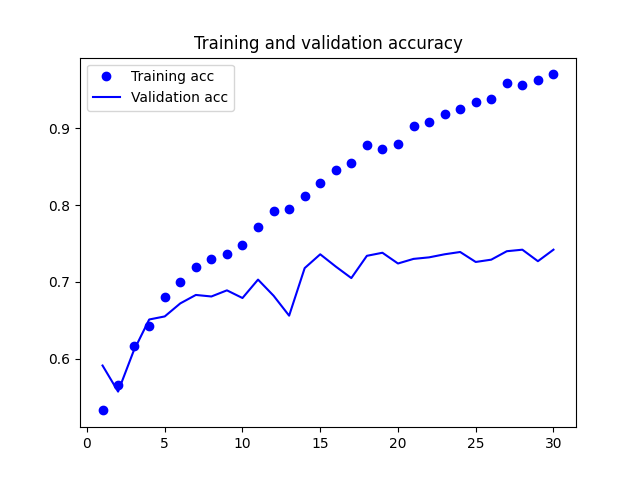
Figure 33: Cats and Dogs Accuracy V1
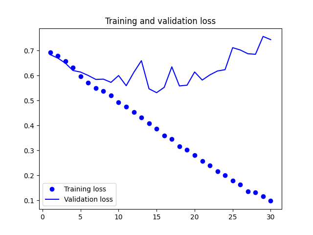
Figure 34: Cats and Dogs Loss V1
由圖33看出訓練準確度成線性成長直到逼近 100%，但驗證準確度則在第三個訓練週期後就停留在 70%；訓練損失分數也呈線性下降，但驗證損失分數則約在第 12 週期後達到最低點。這些都是明顯的 overfitting 訊號。
由於訓練樣本數(2000)相對較少，overfitting 將成為訓練 model 的首要顧慮因素，幾種緩解 overfitting 的技術有：
- dropout
- 權重調整(L2 regularization)
- 資料擴增法(data augmentation)
8.3. 改善#1: 資料擴增
Overfitting 的部份成因是由於樣本太少導致無法訓練出具備普適性、可套用到新資料的 model，想像一下如果有無限量的資料，則 model 將會因應用手邊資料的各種可能面向，也就不致於 overfitting。資料擴增(Data Augmentation)就是由現有訓練樣本生成更多訓練資料的方法，主要是透過隨機變換原始資料，以產生相似的影像，進而增加訓練樣本數。最終目標是在訓練時，model 不會看到兩次完全相同的影像。
在 Keras 中，我們可以藉由設定 ImageDataGenerator，在讀取影像時執行隨機變換(random transformation)來達到資料擴增，至於變換的方向則可以在 ImageDataGenerator 的參數中進一步指定。以下例來看：
1: datagen = ImageDataGenerator( 2: rotation_range=40, #旋轉角度值(0~180) 3: width_shift_range=0.2, #水平隨機平移(圖片寬度之百分比) 4: height_shift_range=0.2, #垂直隨機平移(圖片高度之百分比) 5: shear_range=0.2, #隨機傾斜(順時鐘傾斜角度) 6: zoom_range=0.2, #隨機縮放(縮放百分比) 7: horizontal_flip=True, #隨機水平翻轉(影像非左右對稱才有效) 8: fill_mode='nearest') #新建影像填補像素方法
上述程式之 fill__mode 共提供四種像素填補方法：
- constant: 依照輸入的 cval(浮點數或整數)將影像邊界之外都以該值填補，例如 cval=k，則影像填補為 kkkkkkkk|abcd|kkkkkkkk
- nearest: 以最接近的像素值填補，如：aaaaaaaa|abcd|dddddddd
- reflect: 以影像重複填補(影像以一正一反方向)，如 abcddcba|abcd|dcbaabcd
- wrap: 以影像重複填補，如：abcdabcd|abcd|abcdabcd
以下為實際運作的示範：
1: import matplotlib 2: import platform 3: if platform.system() == 'Darwin': 4: matplotlib.use('MacOSX') 5: else: 6: matplotlib.use('TkAgg') 7: 8: from keras.preprocessing.image import ImageDataGenerator 9: 10: datagen = ImageDataGenerator( 11: rotation_range=40, #旋轉角度值(0~180) 12: width_shift_range=0.2, #水平隨機平移(圖片寬度之百分比) 13: height_shift_range=0.2, #垂直隨機平移(圖片高度之百分比) 14: shear_range=0.2, #隨機傾斜(順時鐘傾斜角度) 15: zoom_range=0.2, #隨機縮放(縮放百分比) 16: horizontal_flip=True, #隨機水平翻轉(影像非左右對稱才有效) 17: fill_mode='nearest') #新建影像填補像素方法 18: 19: import os, shutil 20: 21: # 解壓縮資料夾所在的目錄路徑(以訓練集中的貓為例) 22: train_cats_dir = os.path.join(train_dir, 'cats') 23: 24: from keras.preprocessing import image 25: import numpy as np 26: 27: fnames = [os.path.join(train_cats_dir, fname) for fname in os.listdir(train_cats_dir)] 28: 29: img_path = fnames[3] #選一張影像來擴充 30: print(img_path) 31: 32: #讀取影像、調整大小 33: img = image.load_img(img_path, target_size=(150, 150)) 34: #將其調整為shape=(150, 150, 3) 35: x = image.img_to_array(img) 36: #調整shape為(1, 150, 150, 3) 37: x = x.reshape((1, ) + x.shape) 38: print(x.shape) 39: 40: i = 0 41: # 繪製model的損失率與精確率 42: import matplotlib.pyplot as plt 43: 44: for batch in datagen.flow(x, batch_size=1): 45: plt.figure(i) 46: #imgplot = plt.imshow(image.array_to_img(batch[0])) 47: plt.imshow(image.array_to_img(batch[0])) 48: #plt.clf() 49: plt.plot() 50: plt.savefig("CatsAugmentation"+str(i)+".png") 51: i += 1 52: if i % 4 == 0: 53: break 54: #plt.show() 55: #plt.savefig("CatsAugmentation.png")
/Volumes/LaCie/data/cats_and_dogs_small/train/cats/cat.3.jpg (1, 150, 150, 3)
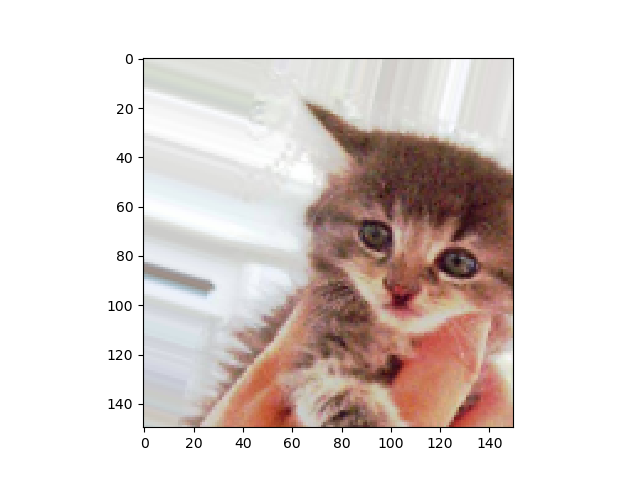
Figure 35: Cats image augmentation
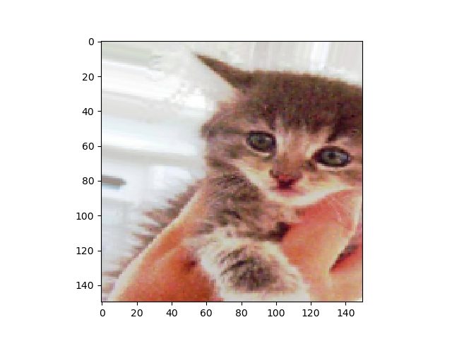
Figure 36: Cats image augmentation

Figure 37: Cats image augmentation

Figure 38: Cats image augmentation
雖然資料擴增能擴充來自少量的原始圖片，但終究無法自行產生資訊，只能重新混合現有資訊，影像間仍是高度相關，仍不足以完全擺脫 overfitting 問題，所以進一步在密集連接的分類器前，在 model 中增加 Dropout 層(Fatten 層後)。
1: import matplotlib 2: import platform 3: if platform.system() == 'Darwin': 4: matplotlib.use('MacOSX') 5: else: 6: matplotlib.use('TkAgg') 7: 8: from keras.preprocessing.image import ImageDataGenerator 9: 10: import os, shutil 11: 12: # 解壓縮資料夾所在的目錄路徑 13: # 參考原程式的路徑 14: 15: # 分拆成訓練、驗證與測試目錄位置 16: train_dir = os.path.join(base_dir, 'train') 17: validation_dir = os.path.join(base_dir, 'validation') 18: test_dir = os.path.join(base_dir, 'test') 19: train_cats_dir = os.path.join(train_dir, 'cats') 20: train_dogs_dir = os.path.join(train_dir, 'dogs') 21: validation_cats_dir = os.path.join(validation_dir, 'cats') 22: validation_dogs_dir = os.path.join(validation_dir, 'dogs') 23: test_cats_dir = os.path.join(test_dir, 'cats') 24: test_dogs_dir = os.path.join(test_dir, 'dogs') 25: 26: # 建立模組 27: from keras import layers 28: from keras import models 29: from keras import regularizers 30: model = models.Sequential() 31: model.add(layers.Conv2D(32, (3, 3), activation='relu', 32: input_shape=(150, 150, 3))) 33: model.add(layers.MaxPooling2D((2, 2))) 34: model.add(layers.Conv2D(64, (3, 3), activation='relu')) 35: model.add(layers.MaxPooling2D((2, 2))) 36: model.add(layers.Conv2D(128, (3, 3), activation='relu')) 37: model.add(layers.MaxPooling2D((2, 2))) 38: model.add(layers.Conv2D(128, (3, 3), activation='relu')) 39: model.add(layers.MaxPooling2D((2, 2))) 40: model.add(layers.Flatten()) 41: model.add(layers.Dropout(0.5)) 42: model.add(layers.Dense(512, activation='relu')) 43: model.add(layers.Dense(1, activation='sigmoid')) 44: model.summary() # 查看模型摘要 45: 46: # 配置 model 以進行訓練 47: from keras import optimizers 48: 49: model.compile(loss='binary_crossentropy', 50: optimizer=optimizers.RMSprop(learning_rate=1e-4), 51: metrics=['acc']) 52: 53: #資料擴增 54: train_datagen = ImageDataGenerator( 55: rescale=1./255, 56: rotation_range=40, 57: width_shift_range=0.2, 58: height_shift_range=0.2, 59: shear_range=0.2, 60: zoom_range=0.2, 61: horizontal_flip=True, ) 62: 63: test_datagen = ImageDataGenerator(rescale=1./255) # 請注意！驗證資料不應該擴充!!! 64: 65: train_generator = train_datagen.flow_from_directory( 66: train_dir, # 目標目錄 67: target_size=(150, 150), # 所有圖像大小調整成 150×150 68: batch_size=32, 69: class_mode='binary') # 因為使用二元交叉熵 binary_crossentropy 作為損失，所以需要二元標籤 70: 71: validation_generator = test_datagen.flow_from_directory( 72: validation_dir, 73: target_size=(150, 150), 74: batch_size=32, 75: class_mode='binary') 76: 77: # 訓練 78: history = model.fit_generator( 79: train_generator, 80: epochs=50, verbose=1, 81: validation_data=validation_generator, 82: validation_steps=1) 83: 84: model.save('cats_and_dogs_small_data_augmentation.h5') 85: 86: # 繪製model的損失率與精確率 87: import matplotlib.pyplot as plt 88: 89: acc = history.history['acc'] 90: val_acc = history.history['val_acc'] 91: loss = history.history['loss'] 92: val_loss = history.history['val_loss'] 93: 94: epochs = range(1, len(acc) + 1) 95: plt.clf() 96: plt.plot(epochs, acc, 'bo', label='Training acc') 97: plt.plot(epochs, val_acc, 'b', label='Validation acc') 98: plt.title('Training and validation accuracy') 99: plt.legend() 100: plt.plot() 101: plt.savefig("CatsDogsDataAugmentation-acc.png") 102: plt.figure() 103: 104: plt.clf() 105: plt.plot(epochs, loss, 'bo', label='Training loss') 106: plt.plot(epochs, val_loss, 'b', label='Validation loss') 107: plt.title('Training and validation loss') 108: plt.legend() 109: plt.plot() 110: plt.savefig("CatsDogsDataAugmentation-loss.png")
Model: "sequential_3" _________________________________________________________________ Layer (type) Output Shape Param # ================================================================= conv2d_12 (Conv2D) (None, 148, 148, 32) 896 max_pooling2d_12 (MaxPooli (None, 74, 74, 32) 0 ng2D) conv2d_13 (Conv2D) (None, 72, 72, 64) 18496 max_pooling2d_13 (MaxPooli (None, 36, 36, 64) 0 ng2D) conv2d_14 (Conv2D) (None, 34, 34, 128) 73856 max_pooling2d_14 (MaxPooli (None, 17, 17, 128) 0 ng2D) conv2d_15 (Conv2D) (None, 15, 15, 128) 147584 max_pooling2d_15 (MaxPooli (None, 7, 7, 128) 0 ng2D) flatten_3 (Flatten) (None, 6272) 0 dropout_2 (Dropout) (None, 6272) 0 dense_6 (Dense) (None, 512) 3211776 dense_7 (Dense) (None, 1) 513 ================================================================= Total params: 3453121 (13.17 MB) Trainable params: 3453121 (13.17 MB) Non-trainable params: 0 (0.00 Byte) _________________________________________________________________ WARNING:absl:At this time, the v2.11+ optimizer `tf.keras.optimizers.RMSprop` runs slowly on M1/M2 Macs, please use the legacy Keras optimizer instead, located at `tf.keras.optimizers.legacy.RMSprop`. Found 2000 images belonging to 2 classes. Found 1000 images belonging to 2 classes. Epoch 1/50 63/63 [==============================] - 19s 302ms/step - loss: 0.6926 - acc: 0.5030 - val_loss: 0.6853 - val_acc: 0.5312 Epoch 2/50 63/63 [==============================] - 19s 296ms/step - loss: 0.6916 - acc: 0.5195 - val_loss: 0.6850 - val_acc: 0.5625 ...略... Epoch 49/50 63/63 [==============================] - 30s 469ms/step - loss: 0.5058 - acc: 0.7555 - val_loss: 0.4970 - val_acc: 0.7188 Epoch 50/50 63/63 [==============================] - 29s 463ms/step - loss: 0.5037 - acc: 0.7535 - val_loss: 0.5148 - val_acc: 0.7188
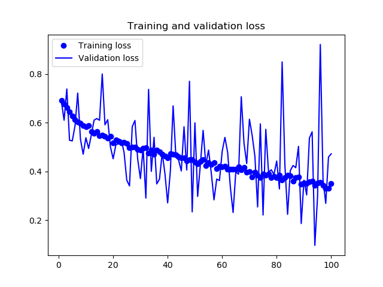
Figure 39: Cats and Dogs Data Augmentation - Loss

Figure 40: Cats and Dogs Data Augmentation - Accuracy
由圖40和39可以發現，在加入了 data augmentation 和 dropout 後，訓練曲線與驗證曲線漸趨一致，不再 overfitting，model 的準確度也達到 84%。但值的一提的是: 同樣的資料集與演算法，在 Google colab 上以 GPU 執行的結果(下圖)與在本機執行(上圖)時並不相同。
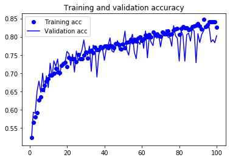
Figure 41: Cats and Dogs Data Augmentation on Google colab - Accuracy

Figure 42: Cats and Dogs Data Augmentation on Google colab - Loss
在透過進一步 regularization 技術的使用，以及調整神經網路參數(如每個卷積層的過濾器數量、神經網路中的層數)，我們就能獲得更高的準確度(86%或 87%)，但在資料不及的情況下(如本例)，我們仍很難進一步提升準確度，此時，就要使用預先訓練 model。
8.4. 改善 2: Pretrained network
Pretrained network，以簡單的話來說，就是「站在巨人的肩膀」9，所謂「巨人」，就是別人已經用 ImageNet 訓練好的模型，例如 Google 的 Inception Model、Microsoft 的 Resnet Model 等等，把它當作 Pre-trained Model，幫助我們提取出照片的特徵(feature)。順帶一提，所謂的 Transfer Learning 就是把 Pre-trained Model 最後一層拔掉 (註：最後一層是用來分類的)，加入新的一層，然後用新資料訓練新層的參數。
能夠用來被當成 pretrained netwrok 的 model 通常是擁有大量資料集的大規模圖片分類模型，如果這個原始資料集足夠大量且具通用性，那麼 pretrained network 學習的空間層次特徵(spartial hierarchy features)就足以充當視覺世界的通用 model，其特徵對於許多不同的電腦視覺問題都同樣有效，即便是要辨識與原始任務完全不同的類別也能通用。
例如，以 ImageNet 先訓練出一個神經網路(其辨識項目為日常生活用品)，然後重新訓練這個已訓練完成的神經網路，去識別和原始樣本天差地別的家具產品等。和許多淺層的神經網路相較，深度學習的關鍵優勢在於學習到的特徵可移植到不同問題上。
以下由 Karen Simonyan 和 Andrew Zisserman 於 2014 年開發的 VGG16 架構。使用 pretrain network 有兩種方式：特徵萃取(feature extraction)和徵調(fine-tuning)。
8.4.1. 特徵萃取
Feature extraction 是使用 pretrained network 學習到的表示法，以這些表示法從新樣本中萃取有趣的特徵，然後將這些特徵輸入到從頭訓練的新分類器中進行處理。用於影像分類的 CNN 分為以下兩部份：以一系列的卷積層和池化層開始，以密集連接的分類器結束。第一部分稱為 model 的 convolutional base (卷積基底)，在 CNN 的情況下，特徵萃取以一個 pretrained network 做為 convolutional base，透過 convolutional base 處理新資料，
為何不連分類器也預先訓練？原因是 CNN 的特徵圖是來自影像上通用 pattern 的概念，因此無論面臨何種電腦視覺問題，都能通用；而分類器學習到的表示法可能只適用於 model 所訓練的類別，僅關於整個影像中該類別相關的機率。此外，卷積特徵圖仍會描述物件出現的位置，但全連接層並沒有空間的概念，全連接層學習到的表示法不再包含物件在輸入影像中位罝的任何訊息，所以只要是和物件出現位置相關的問題，全連接層產生的特徵絕大多數是沒有用的。
特定卷積層所萃取出來的表示法，其普適程度取於該層的深度，model 中較早出現的層會萃取局部、高度通用的特徵圖（例如可視邊緣、顏色或紋理），而較深入的層則會萃取更抽象的概念（如貓耳朵、狗眼），如果新的資料集與訓練原始 model 的資料集有很大的差別，最好使用 model 的前幾層來進行特徵萃取，而不是使用整個 convolutional base。以下以 ImageNet 訓練的 VGG16 所產生的 convolutional base 來實作，類似 pretrained 的影像分類 model 還有 Xception、Inception V3、ResNet50、VGG19、MobileNet，均已收錄於 keras.applications。
8.4.1.1. 初始化 model
要使用這個 pretrained model，還需要傳三個參數給 VGG16 建構式：
- weights: 用於初始化 model 的權重檢查點
- include_top: 指在神經網路頂部有沒有包含密集連接的分類器。預設情況下，密集連接分類器對應於 ImageNet 的 1000 個類別。然而，我們實際想分類的可能沒這麼多層，所以這裡不一定要包含預設分類器。
- input_shape: qpaqamo 供給神經網路的影像張量 shape。這個參數為 optional，如果不傳，則神經網路能處理任何 shape 的輸入張量。
這裡會從網路下載VGG16模型以及其參數權重，會花一點時間….
1: from keras.applications import VGG16 2: 3: conv_base = VGG16(weights='imagenet', 4: include_top=False, 5: input_shape=(150, 150, 3)) 6: conv_base.summary()
Downloading data from https://storage.googleapis.com/tensorflow/keras-applications/vgg16/vgg16_weights_tf_dim_ordering_tf_kernels_notop.h5 58889256/58889256 [==============================] - 98s 2us/step Model: "vgg16" _________________________________________________________________ Layer (type) Output Shape Param # ================================================================= input_1 (InputLayer) [(None, 150, 150, 3)] 0 block1_conv1 (Conv2D) (None, 150, 150, 64) 1792 block1_conv2 (Conv2D) (None, 150, 150, 64) 36928 block1_pool (MaxPooling2D) (None, 75, 75, 64) 0 block2_conv1 (Conv2D) (None, 75, 75, 128) 73856 block2_conv2 (Conv2D) (None, 75, 75, 128) 147584 block2_pool (MaxPooling2D) (None, 37, 37, 128) 0 block3_conv1 (Conv2D) (None, 37, 37, 256) 295168 block3_conv2 (Conv2D) (None, 37, 37, 256) 590080 block3_conv3 (Conv2D) (None, 37, 37, 256) 590080 block3_pool (MaxPooling2D) (None, 18, 18, 256) 0 block4_conv1 (Conv2D) (None, 18, 18, 512) 1180160 block4_conv2 (Conv2D) (None, 18, 18, 512) 2359808 block4_conv3 (Conv2D) (None, 18, 18, 512) 2359808 block4_pool (MaxPooling2D) (None, 9, 9, 512) 0 block5_conv1 (Conv2D) (None, 9, 9, 512) 2359808 block5_conv2 (Conv2D) (None, 9, 9, 512) 2359808 block5_conv3 (Conv2D) (None, 9, 9, 512) 2359808 block5_pool (MaxPooling2D) (None, 4, 4, 512) 0 ================================================================= Total params: 14714688 (56.13 MB) Trainable params: 14714688 (56.13 MB) Non-trainable params: 0 (0.00 Byte) _________________________________________________________________
由上述輸出觀察，最終特徵圖的 shape 為(4, 4, 512)，這算是神經網路的 top 層特徵，這個預訓練的 model 共有 13 層 Conv2D 層，最後要再接上密集連接分類器。做法有二：
- 在資料集上執行 convolutional base，將輸出記錄到硬碟上的 Numpy 陣列，然後再輸入到獨立的密集分類層。這種解決方案只需要為每個輪入影像執行一次 convolutional base，而 convolutional base 是處理過程中成本最高的部份，所以這種做法速度快成本低。但也因如此，這種做法不允許使用資料擴增法。
- 在頂部(最後端)增加 Dnese 層來擴展 model (conv_base)，並從輸入資料開始，從頭到尾執行整個處理過程。這種方式允許資料擴增技術，因為每次輸入影像在執行 convolutional base 時都會在 model 處理到。但這種方式的成本較高。
8.4.1.2. 快速特徵萃取
先執行 ImageDataGenerator，將影像轉換為 Numpy 陣列及其 label 向量，然後呼叫 conv_base model 的 predict 方法從這些影像中萃取特徵。
1: from keras.applications import VGG16 2: 3: conv_base = VGG16(weights='imagenet', 4: include_top=False, 5: input_shape=(150, 150, 3)) 6: 7: import os 8: import numpy as np 9: from keras.preprocessing.image import ImageDataGenerator 10: 11: base_dir = r'/Volumes/LaCie/data/cats_and_dogs_small' 12: train_dir = os.path.join(base_dir, 'train') 13: validation_dir = os.path.join(base_dir, 'validation') 14: test_dir = os.path.join(base_dir, 'test') 15: 16: datagen = ImageDataGenerator(rescale=1./255) 17: batch_size = 20 18: 19: def extract_features(directory, sample_count): 20: features = np.zeros(shape=(sample_count, 4, 4, 512)) 21: labels = np.zeros(shape=(sample_count)) 22: generator = datagen.flow_from_directory(directory, 23: target_size=(150, 150), 24: batch_size=batch_size, 25: class_mode='binary') 26: i = 0 27: for inputs_batch, labels_batch in generator: 28: features_batch = conv_base.predict(inputs_batch) 29: features[i * batch_size : (i + 1) * batch_size] = features_batch 30: labels[i * batch_size : (i + 1) * batch_size] = labels_batch 31: i += 1 32: print(i, end=' ') # 由於萃取需要較長的時間，我們印出 i 來檢視進度 33: if i * batch_size >= sample_count: 34: break 35: return features, labels 36: 37: train_features, train_labels = extract_features(train_dir, 2000) 38: validation_features, validation_labels = extract_features(validation_dir, 1000) 39: test_features, test_labels = extract_features(test_dir, 1000)
Found 2000 images belonging to 2 classes. 1/1 [==============================] - 1s 899ms/step 1/1 [==============================] - 1s 768ms/step ...略... 1/1 [==============================] - 1s 1s/step 100 Found 1000 images belonging to 2 classes. 1/1 [==============================] - 1s 1s/step ...略... 1/1 [==============================] - 1s 1s/step 50 Found 1000 images belonging to 2 classes. 1/1 [==============================] - 1s 1s/step ...略... 1/1 [==============================] - 1s 1s/step 50
8.4.1.3. 攤平資料
由於目前的萃取特徵 shape = (樣本數, 4, 4, 512)，為了要提供給全連接層分類器，必須將資料攤平為(樣本數, 8192)。
1: train_features = np.reshape(train_features, (2000, 4 * 4 * 512)) 2: validation_features = np.reshape(validation_features, (1000, 4 * 4 * 512)) 3: test_features = np.reshape(test_features, (1000, 4 * 4 * 512))
8.4.1.4. 訓練
接下來就可以建立我們的密集分類層（使用 dropout 和 regularization)在剛剛萃取的資料和標籤上進行訓練。因為只有兩個全連接層，所以訓練的速度會很快。
1: from keras import models 2: from keras import layers 3: from keras import optimizers 4: 5: model = models.Sequential() 6: model.add(layers.Dense(256, activation='relu', input_dim=4 * 4 * 512)) 7: model.add(layers.Dropout(0.5)) # 丟棄法 8: model.add(layers.Dense(1, activation='sigmoid')) 9: 10: model.compile(optimizer=optimizers.RMSprop(lr=2e-5), 11: loss='binary_crossentropy', 12: metrics=['acc']) 13: 14: history = model.fit(train_features, 15: train_labels,epochs=30, 16: batch_size=20, 17: validation_data=(validation_features, validation_labels))
WARNING:absl:At this time, the v2.11+ optimizer `tf.keras.optimizers.RMSprop` runs slowly on M1/M2 Macs, please use the legacy Keras optimizer instead, located at `tf.keras.optimizers.legacy.RMSprop`. WARNING:absl:`lr` is deprecated in Keras optimizer, please use `learning_rate` or use the legacy optimizer, e.g.,tf.keras.optimizers.legacy.RMSprop. Epoch 1/30 100/100 [==============================] - 1s 9ms/step - loss: 0.7346 - acc: 0.7575 - val_loss: 0.4003 - val_acc: 0.8000 ...略... Epoch 30/30 100/100 [==============================] - 1s 6ms/step - loss: 0.0202 - acc: 0.9920 - val_loss: 0.6260 - val_acc: 0.9030
8.4.1.5. 繪圖
1: import matplotlib.pyplot as plt 2: 3: acc = history.history['acc'] 4: val_acc = history.history['val_acc'] 5: loss = history.history['loss'] 6: val_loss = history.history['val_loss'] 7: 8: epochs = range(1, len(acc) + 1) 9: 10: plt.cla() 11: plt.plot(epochs, acc, 'bo', label='Training acc') 12: plt.plot(epochs, val_acc, 'b', label='Validation acc') 13: plt.title('Training and validation accuracy') 14: plt.legend(loc="lower right") 15: plt.savefig('images/pretrained-catdog-acc.png', dpi=300) 16: 17: plt.figure() 18: plt.cla() 19: plt.plot(epochs, loss, 'bo', label='Training loss') 20: plt.plot(epochs, val_loss, 'b', label='Validation loss') 21: plt.title('Training and validation loss') 22: plt.legend(loc="upper left") 23: plt.savefig('images/pretrained-catdog-loss.png', dpi=300)
Figure 43: Caption
Figure 44: Caption
8.4.1.6. 加入資料擴增的特徵萃取
將資料擴增加入特徵萃取的作法是擴展 conv_base model 並從輸入資料開始，從頭到尾執行整個處理過程，這種做法的運算成本非常昂貴，只能在 GPU 上執行，在 CPU 上絕對難以處理。由於 model 的行為與 layer 類似，因此可以將 model(如 conv\uunder{}base)視為 layer，增加到 Sequential model 中，就如同增加神經網路的 layer 一樣。其作法如下：
1: from keras import models 2: from keras import layers 3: from keras.applications import VGG16 4: 5: conv_base = VGG16(weights='imagenet', # 卷積基底 6: include_top=False, # 只需要卷積基底的權重模型資訊 7: input_shape=(150, 150, 3)) 8: 9: model = models.Sequential() 10: model.add(conv_base) # 將卷積基底視為層加入 Sequential 模型中 11: model.add(layers.Flatten()) # 攤平 12: model.add(layers.Dense(256, activation='relu')) 13: model.add(layers.Dense(1, activation='sigmoid')) # 增加全連接層分類器 14: model.summary() # 查看模型摘要
Model: "sequential_5" _________________________________________________________________ Layer (type) Output Shape Param # ================================================================= vgg16 (Functional) (None, 4, 4, 512) 14714688 flatten_4 (Flatten) (None, 8192) 0 dense_10 (Dense) (None, 256) 2097408 dense_11 (Dense) (None, 1) 257 ================================================================= Total params: 16812353 (64.13 MB) Trainable params: 16812353 (64.13 MB) Non-trainable params: 0 (0.00 Byte) _________________________________________________________________
如上圖，VGG16 的 convolutional base 有 14714688 個參數，在頂部(後端)增加的分類器有 200 多萬個參數。在加入資料擴增之前，凍結 convolutional base 是非常重要的，凍結(freeze)表示在訓練期間禁止更新權重，如果不這樣做，則 convolutional base 先前學習到的表示法就會在訓練期間被修改掉，因為頂部的 Dense 層是隨機初始化的，所以非常大量的權重更新將透過神經網路傳播，會導致先前學習到的表示法被破壞掉。
在 Keras 中，可以透過設定模型的 trainable 屬性為 False 來凍結 convolutional base 神經網路：
1: # freeze convolutional base 2: print('This is the number of trainable weights ' 3: 'before freezing the conv base:', len(model.trainable_weights)) 4: conv_base.trainable = False # 凍結權重 5: print('This is the number of trainable weights ' 6: 'after freezing the conv base:', len(model.trainable_weights))
This is the number of trainable weights before freezing the conv base: 30 This is the number of trainable weights after freezing the conv base: 4
由於 conv_base 被凍結更新權重，所以 model 只會訓練增力的兩個 Dense 層權重，每層有兩個參數要更新(主要權重矩陣和偏差向量)，所以一共剩 4 個 trainable weights，原本的 pretrained model 有 13 層 Conv2D，共 26 個 trainable weights。
接下來就可以使用資料擴增來訓練 model:
1: from keras import models 2: from keras import layers 3: from keras.applications import VGG16 4: 5: conv_base = VGG16(weights='imagenet', # 卷積基底 6: include_top=False, 7: input_shape=(150, 150, 3)) 8: 9: import os 10: import numpy as np 11: from keras.preprocessing.image import ImageDataGenerator 12: 13: base_dir = r'/Volumes/LaCie/data/cats_and_dogs_small' 14: train_dir = os.path.join(base_dir, 'train') 15: validation_dir = os.path.join(base_dir, 'validation') 16: test_dir = os.path.join(base_dir, 'test') 17: 18: model = models.Sequential() 19: model.add(conv_base) # 將卷積基底視為層加入 Sequential 模型中 20: model.add(layers.Flatten()) # 攤平 21: model.add(layers.Dense(256, activation='relu')) 22: model.add(layers.Dense(1, activation='sigmoid')) # 增加全連接層分類器 23: 24: conv_base.trainable = False # 凍結權重 25: 26: # data augmentation 27: from keras.preprocessing.image import ImageDataGenerator 28: from keras import optimizers 29: 30: train_datagen = ImageDataGenerator( # 擴充訓練資料 31: rescale=1./255, 32: rotation_range=40, 33: width_shift_range=0.2, 34: height_shift_range=0.2, 35: shear_range=0.2, 36: zoom_range=0.2, 37: horizontal_flip=True, 38: fill_mode='nearest') 39: 40: test_datagen = ImageDataGenerator(rescale=1./255) # 請注意驗證資料不應該擴充 41: 42: train_generator = train_datagen.flow_from_directory( 43: train_dir, # 目標目錄路徑 44: target_size=(150, 150), # 調整所有圖像大小成 150×150 45: batch_size=20, 46: class_mode='binary') # 因為使用二元交叉熵 binary_crossentropy 作為損失分數，所 以需要二元標籤 47: 48: validation_generator = test_datagen.flow_from_directory( 49: validation_dir, 50: target_size=(150, 150), 51: batch_size=20, 52: class_mode='binary') 53: 54: model.compile( loss='binary_crossentropy', 55: optimizer=optimizers.RMSprop(lr=2e-5), 56: metrics=['acc']) 57: 58: history = model.fit_generator( 59: train_generator, 60: steps_per_epoch=100, 61: epochs=30, 62: validation_data=validation_generator, 63: validation_steps=50) 64: 65: # 繪製model的損失率與精確率 66: import matplotlib.pyplot as plt 67: 68: acc = history.history['acc'] 69: val_acc = history.history['val_acc'] 70: loss = history.history['loss'] 71: val_loss = history.history['val_loss'] 72: 73: epochs = range(1, len(acc) + 1) 74: plt.clf() 75: plt.plot(epochs, acc, 'bo', label='Training acc') 76: plt.plot(epochs, val_acc, 'b', label='Validation acc') 77: plt.title('Training and validation accuracy') 78: plt.legend() 79: plt.plot() 80: plt.savefig("images/CatsDogsDataAugmentationPretrained-acc.png") 81: plt.figure() 82: 83: plt.clf() 84: plt.plot(epochs, loss, 'bo', label='Training loss') 85: plt.plot(epochs, val_loss, 'b', label='Validation loss') 86: plt.title('Training and validation loss') 87: plt.legend() 88: plt.plot() 89: plt.savefig("images/CatsDogsDataAugmentationPretrained-loss.png")
Found 2000 images belonging to 2 classes. Found 1000 images belonging to 2 classes. WARNING:absl:At this time, the v2.11+ optimizer `tf.keras.optimizers.RMSprop` runs slowly on M1/M2 Macs, please use the legacy Keras optimizer instead, located at `tf.keras.optimizers.legacy.RMSprop`. WARNING:absl:`lr` is deprecated in Keras optimizer, please use `learning_rate` or use the legacy optimizer, e.g.,tf.keras.optimizers.legacy.RMSprop. /var/folders/6z/55c40g5s2qz2rh1t3s5zwtzw0000gn/T/pycu86w4:60: UserWarning: `Model.fit_generator` is deprecated and will be removed in a future version. Please use `Model.fit`, which supports generators. Epoch 1/30 100/100 [==============================] - 146s 1s/step - loss: 0.7296 - acc: 0.6900 - val_loss: 0.3320 - val_acc: 0.8540 Epoch 2/30 100/100 [==============================] - 175s 2s/step - loss: 0.4518 - acc: 0.7910 - val_loss: 0.2749 - val_acc: 0.8850 ...略... Epoch 29/30 100/100 [==============================] - 242s 2s/step - loss: 0.2696 - acc: 0.8820 - val_loss: 0.2479 - val_acc: 0.9060 Epoch 30/30 100/100 [==============================] - 245s 2s/step - loss: 0.2693 - acc: 0.8760 - val_loss: 0.3019 - val_acc: 0.8830

Figure 45: Cats and Dogs Data Augmentation / Pretrained- Accuracy
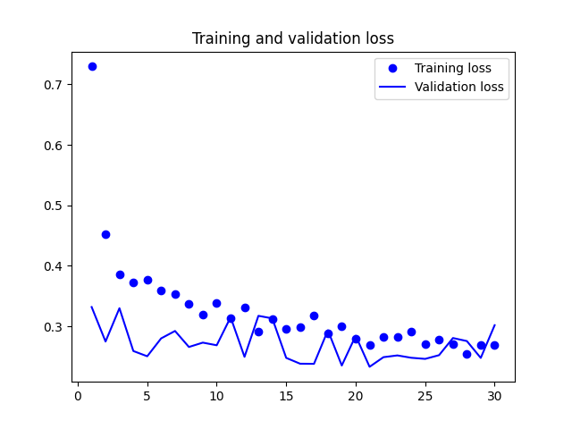
Figure 46: Cats and Dogs Data Augmentation - Loss
實作結果，驗證準確率達 90%，優於從頭訓練小型神經網路（結果與原書中達 96%有所出入）。
8.4.2. 微調
微調(fine-tuning)為另一種廣泛使用的 model reuse 技術，本質上是特徵萃取的變化版，其做法是在特徵萃取的過程中不凍結整個 convolutional base，而是解凍 convolutional base 頂部的某些層以用於特徵萃取，並對於新增加於 model 的部份(如全連接層分類器)與被解凍的部份層一起進行聯合訓練。
微調神經網路的步驟如下：
- 在已訓練過的基礎神經網路(即 convolutional base)上增加自定義神經網路
- 凍結 convolutional base
- 訓練步驟 1 增加的部份(即最頂端的分類器)
- 解凍 convolutional base 的某幾層
- 共同訓練解凍層和分類器
以 VGG16 的模組架構為例，其分層架構如下：
1: from keras.applications import VGG16 2: 3: conv_base = VGG16(weights='imagenet', 4: include_top=False, 5: input_shape=(150, 150, 3)) 6: conv_base.summary()
Model: "vgg16" _________________________________________________________________ Layer (type) Output Shape Param # ================================================================= input_1 (InputLayer) (None, 150, 150, 3) 0 _________________________________________________________________ block1_conv1 (Conv2D) (None, 150, 150, 64) 1792 _________________________________________________________________ block1_conv2 (Conv2D) (None, 150, 150, 64) 36928 _________________________________________________________________ block1_pool (MaxPooling2D) (None, 75, 75, 64) 0 _________________________________________________________________ block2_conv1 (Conv2D) (None, 75, 75, 128) 73856 _________________________________________________________________ block2_conv2 (Conv2D) (None, 75, 75, 128) 147584 _________________________________________________________________ block2_pool (MaxPooling2D) (None, 37, 37, 128) 0 _________________________________________________________________ block3_conv1 (Conv2D) (None, 37, 37, 256) 295168 _________________________________________________________________ block3_conv2 (Conv2D) (None, 37, 37, 256) 590080 _________________________________________________________________ block3_conv3 (Conv2D) (None, 37, 37, 256) 590080 _________________________________________________________________ block3_pool (MaxPooling2D) (None, 18, 18, 256) 0 _________________________________________________________________ block4_conv1 (Conv2D) (None, 18, 18, 512) 1180160 _________________________________________________________________ block4_conv2 (Conv2D) (None, 18, 18, 512) 2359808 _________________________________________________________________ block4_conv3 (Conv2D) (None, 18, 18, 512) 2359808 _________________________________________________________________ block4_pool (MaxPooling2D) (None, 9, 9, 512) 0 _________________________________________________________________ block5_conv1 (Conv2D) (None, 9, 9, 512) 2359808 _________________________________________________________________ block5_conv2 (Conv2D) (None, 9, 9, 512) 2359808 _________________________________________________________________ block5_conv3 (Conv2D) (None, 9, 9, 512) 2359808 _________________________________________________________________ block5_pool (MaxPooling2D) (None, 4, 4, 512) 0 ================================================================= Total params: 14,714,688 Trainable params: 14,714,688 Non-trainable params: 0 _________________________________________________________________
我們可以調整這個 convolutional base 的最頂層(block5)三層的卷積層，即 block5_conv1、block5_conv2、block5_conv3 三層，然後凍結 block4_pool 以下的所有層。之所以選擇只解凍 convolutional base 的最頂層，幾個考量原因如下：
- 相對於 convolutional base 中的低層主要是對更通用、可重複使用的特徵進行編碼；更高層則是對更特定的特徵進行編碼，所以這些特徵需要重新調整才能適用於新的問題。如果是對低層進行微調，則會出現反效果。
- 訓練的參數越多，就越可能 overfitting。convolutional base 有近 1500 萬個參數，因此在少量資料集上訓練會有風險。
解凍部份 convolutional base 的方式如下：
1: from keras.applications import VGG16 2: 3: conv_base = VGG16(weights='imagenet', 4: include_top=False, 5: input_shape=(150, 150, 3)) 6: conv_base.summary() 7: 8: conv_base.trainable = True #先設定所有layer都可訓練? 9: set_trainable = False #預設為凍結 10: 11: for layer in conv_base.layers: #由低到高 12: if layer.name == 'block5_conv1': #直到出現block5_conv1這層後開始解凍 13: set_trainable = True 14: if set_trainable: 15: layer.trainable = True 16: else: 17: layer.trainable = False
解凍完部份 layer 後即可開始徵調神經網路，這裡使用 RMSProp 優化器以非常低的學習率來微調，降低學習率的目的在減小 3 個解凍層的修改幅度，以免因為過大的修改損害到這些表示法。
1: # 編譯模型 2: model.compile( 3: loss='binary_crossentropy', 4: optimizer=optimizers.RMSprop(lr=1e-5), 5: metrics=['acc']) 6: 7: # 訓練模型 8: history = model.fit_generator( 9: train_generator, 10: steps_per_epoch=100, 11: epochs=100, 12: validation_data=validation_generator, 13: validation_steps=50)
1: import os 2: import numpy as np 3: from keras.preprocessing.image import ImageDataGenerator 4: 5: base_dir = r'/Volumes/LaCie/data/cats_and_dogs_small' 6: train_dir = os.path.join(base_dir, 'train') 7: validation_dir = os.path.join(base_dir, 'validation') 8: test_dir = os.path.join(base_dir, 'test') 9: 10: # 部份凍結 11: from keras.applications import VGG16 12: 13: conv_base = VGG16(weights='imagenet', 14: include_top=False, 15: input_shape=(150, 150, 3)) 16: conv_base.summary() 17: 18: conv_base.trainable = True #先設定所有layer都可訓練? 19: set_trainable = False #預設為凍結 20: 21: for layer in conv_base.layers: #由低到高 22: if layer.name == 'block5_conv1': #直到出現block5_conv1這層後開始解凍 23: set_trainable = True 24: if set_trainable: 25: layer.trainable = True 26: else: 27: layer.trainable = False 28: 29: # data augmentation 30: from keras.preprocessing.image import ImageDataGenerator 31: from keras import optimizers 32: 33: train_datagen = ImageDataGenerator( # 擴充訓練資料 34: rescale=1./255, 35: rotation_range=40, 36: width_shift_range=0.2, 37: height_shift_range=0.2, 38: shear_range=0.2, 39: zoom_range=0.2, 40: horizontal_flip=True, 41: fill_mode='nearest') 42: 43: test_datagen = ImageDataGenerator(rescale=1./255) # 請注意驗證資料不應該擴充 44: 45: train_generator = train_datagen.flow_from_directory( 46: train_dir, # 目標目錄路徑 47: target_size=(150, 150), # 調整所有圖像大小成 150×150 48: batch_size=20, 49: class_mode='binary') # 因為使用二元交叉熵 binary_crossentropy 作為損失分數，所 以需要二元標籤 50: 51: validation_generator = test_datagen.flow_from_directory( 52: validation_dir, 53: target_size=(150, 150), 54: batch_size=20, 55: class_mode='binary') 56: 57: from keras import models 58: from keras import layers 59: from keras import optimizers 60: 61: # model還是要加後面的layer? 62: model = models.Sequential() 63: model.add(conv_base) # 將卷積基底視為層加入 Sequential 模型中 64: model.add(layers.Flatten()) # 攤平 65: model.add(layers.Dense(256, activation='relu')) 66: model.add(layers.Dense(1, activation='sigmoid')) # 增加全連接層分類器 67: 68: # 微調 69: # 編譯模型 70: model.compile( 71: loss='binary_crossentropy', 72: optimizer=optimizers.RMSprop(lr=1e-5), 73: metrics=['acc']) 74: 75: # 訓練模型 76: history = model.fit_generator( 77: train_generator, 78: steps_per_epoch=100, 79: epochs=100, 80: validation_data=validation_generator, 81: validation_steps=50) 82: 83: # 繪製model的損失率與精確率 84: import matplotlib.pyplot as plt 85: 86: acc = history.history['acc'] 87: val_acc = history.history['val_acc'] 88: loss = history.history['loss'] 89: val_loss = history.history['val_loss'] 90: 91: epochs = range(1, len(acc) + 1) 92: plt.clf() 93: plt.plot(epochs, acc, 'bo', label='Training acc') 94: plt.plot(epochs, val_acc, 'b', label='Validation acc') 95: plt.title('Training and validation accuracy') 96: plt.legend() 97: plt.plot() 98: plt.savefig("images/FineTune-acc-1.png") 99: plt.figure() 100: 101: plt.clf() 102: plt.plot(epochs, loss, 'bo', label='Training loss') 103: plt.plot(epochs, val_loss, 'b', label='Validation loss') 104: plt.title('Training and validation loss') 105: plt.legend() 106: plt.plot() 107: plt.savefig("images/FineTune-loss-1.png")
Model: "vgg16" _________________________________________________________________ Layer (type) Output Shape Param # ================================================================= input_1 (InputLayer) (None, 150, 150, 3) 0 _________________________________________________________________ block1_conv1 (Conv2D) (None, 150, 150, 64) 1792 _________________________________________________________________ block1_conv2 (Conv2D) (None, 150, 150, 64) 36928 _________________________________________________________________ block1_pool (MaxPooling2D) (None, 75, 75, 64) 0 _________________________________________________________________ block2_conv1 (Conv2D) (None, 75, 75, 128) 73856 _________________________________________________________________ block2_conv2 (Conv2D) (None, 75, 75, 128) 147584 _________________________________________________________________ block2_pool (MaxPooling2D) (None, 37, 37, 128) 0 _________________________________________________________________ block3_conv1 (Conv2D) (None, 37, 37, 256) 295168 _________________________________________________________________ block3_conv2 (Conv2D) (None, 37, 37, 256) 590080 _________________________________________________________________ block3_conv3 (Conv2D) (None, 37, 37, 256) 590080 _________________________________________________________________ block3_pool (MaxPooling2D) (None, 18, 18, 256) 0 _________________________________________________________________ block4_conv1 (Conv2D) (None, 18, 18, 512) 1180160 _________________________________________________________________ block4_conv2 (Conv2D) (None, 18, 18, 512) 2359808 _________________________________________________________________ block4_conv3 (Conv2D) (None, 18, 18, 512) 2359808 _________________________________________________________________ block4_pool (MaxPooling2D) (None, 9, 9, 512) 0 _________________________________________________________________ block5_conv1 (Conv2D) (None, 9, 9, 512) 2359808 _________________________________________________________________ block5_conv2 (Conv2D) (None, 9, 9, 512) 2359808 _________________________________________________________________ block5_conv3 (Conv2D) (None, 9, 9, 512) 2359808 _________________________________________________________________ block5_pool (MaxPooling2D) (None, 4, 4, 512) 0 ================================================================= Total params: 14,714,688 Trainable params: 14,714,688 Non-trainable params: 0 _________________________________________________________________ Found 2000 images belonging to 2 classes. Found 1000 images belonging to 2 classes. 100/100 [==============================] - 602s 6s/step - loss: 0.0200 - acc: 0.9935 - val_loss: 0.0559 - val_acc: 0.9380
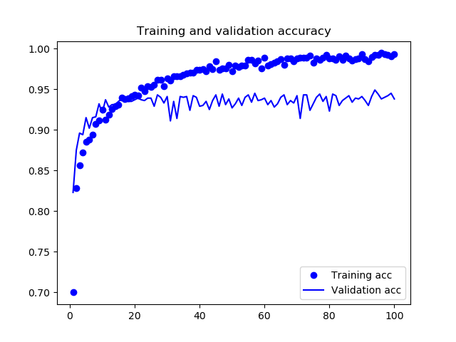
Figure 47: VGG16 Fine Tune Acc
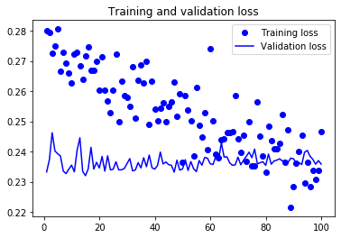
Figure 48: VGG16 Fine Tune Loss
微調的訓練準確率來到 99%，驗證準確率也有 94%，這是使用 2000 個訓練樣本就達到的結果。
9. 視覺化呈現 CNN 的學習內容
CNN 學習的表示法非常適合以視覺化呈現，因為它們大部份就是視覺概念的表示法(represnetations of visual concepts)，幾種常用的視得化技術如下：
- 視覺化中間層 convnet 的輸出(中間啟動函數)：有助於理解 convnet 是如何一層一層的轉化資料，以及對過濾器(filter)的含義。
- 視覺化 CNN 過濾器：用於準確理解 CNN 中每個過濾器所要接受的視覺 patter 或概念中
- 視覺化類別激活熱圖(heatmaps of class activation): 有助於了解影像的哪些部份被識別為某個類別，藉以定位影像中的物件。
9.1. 中間層輸出視覺化
以下的工作主要是在給定輸入影像後，以圖形化的方式顯示卷積神經網路中各個卷積層和池化層輸出的特徵圖。讓我們能看到在CNN的學習過程中，輸入資料是如何經由逐層分解到不同的過濾器。雖然輸入資料為三個維度(width, height, channel)，但其實每個 channel 會針對相對獨立的特徵值(features)進行編碼，所以此處是將每個 channel 的內容獨立繪製成 2D 圖形秀出。
先載入之前儲存好的 model，取一張測試集中的照片(未經訓練過)，秀出原始內容，然後萃取出特徵圖，因為在這裡只是想看一張圖，所以要建新一個新的 Keras model。
1: from keras.models import load_model 2: 3: # 加載保存的模型： 4: model = load_model('cats_and_dogs_small_i.h5') 5: model.summary() # 打印模型
WARNING:absl:At this time, the v2.11+ optimizer `tf.keras.optimizers.RMSprop` runs slowly on M1/M2 Macs, please use the legacy Keras optimizer instead, located at `tf.keras.optimizers.legacy.RMSprop`. Model: "sequential" _________________________________________________________________ Layer (type) Output Shape Param # ================================================================= conv2d (Conv2D) (None, 148, 148, 32) 896 max_pooling2d (MaxPooling2 (None, 74, 74, 32) 0 D) conv2d_1 (Conv2D) (None, 72, 72, 64) 18496 max_pooling2d_1 (MaxPoolin (None, 36, 36, 64) 0 g2D) conv2d_2 (Conv2D) (None, 34, 34, 128) 73856 max_pooling2d_2 (MaxPoolin (None, 17, 17, 128) 0 g2D) conv2d_3 (Conv2D) (None, 15, 15, 128) 147584 max_pooling2d_3 (MaxPoolin (None, 7, 7, 128) 0 g2D) flatten (Flatten) (None, 6272) 0 dense (Dense) (None, 512) 3211776 dense_1 (Dense) (None, 1) 513 ================================================================= Total params: 3453121 (13.17 MB) Trainable params: 3453121 (13.17 MB) Non-trainable params: 0 (0.00 Byte) _________________________________________________________________
留意一下上述的summary()結果，第一層卷積層(conv2d)的輸出為32個channel所生成的148×148的特徵圖，等一下我們就從中間挑出一張來瞧瞧成果。
9.2. 查看新圖
使用一個未被模型看過的圖像作為輸入(一個貓的圖片，它不是訓練集的一部分)：
1: img_path = '/Volumes/LaCie/data/cats_and_dogs_small/test/cats/cat.1700.jpg' 2: # 我們把圖像轉換成網絡要求的張量shape (4D 張量) 3: # (樣本數, 圖像高度, 圖像寬度, 圖像通道) 4: from keras.preprocessing import image 5: import numpy as np 6: 7: img = image.load_img(img_path, target_size=(150, 150)) # 載入圖像並轉換大小為150x150 8: img_tensor = image.img_to_array(img) # 把影像物件轉換成 numpy ndarray物件 9: 10: print("Origin img_tensor shape: ", img_tensor.shape) 11: 12: img_tensor = np.expand_dims(img_tensor, axis=0) # 多增加一個維度來符合Keras Conv2D的要求 13: 14: print("After reshape img_tensor shape: ", img_tensor.shape) 15: 16: # 這個模型的輸入是有經過歸一化的前處理 17: # 所以我們也要進行相同的前處理 18: img_tensor /= 255. # 進行資料尺度(scale)的轉換
Origin img_tensor shape: (150, 150, 3) After reshape img_tensor shape: (1, 150, 150, 3)
這張測試集照片的原圖如下:
Figure 49: 測試集原圖
因為原始模型的目的並不是要讓使用者查看每一層的輸出結果，為了讓我們能強力介入每一層去看出各層的輸出，我們要建立一個新的模型，只以一張圖(圖49)做為輸入，並輸出所有經過卷積層和池化層的激勵輸出結果。
這個模型需要兩個參數：輸入張量（或輸入張量列表）以及輸出張量（或輸出張量列表）。所得到的類別是一個Keras模型(model)物件，就如同我們之前所建立的Sequential模型，但是這個Model類別允許具有多個輸出的模型，這是與之前我們建立的Sequential最大的不同。
1: from keras import models 2: 3: # 創建一個list來儲存前8層處理後的outputs 4: layer_outputs = [layer.output for layer in model.layers[:8]] 5: 6: # 產生一個model物件, 它的input是原先模型的input, 而它的output則是前8層處理後的outputs 7: activation_model = models.Model(inputs=model.input, outputs=layer_outputs) 8: 9: print(layer_outputs) # 看一下物件的結構
[<KerasTensor: shape=(None, 148, 148, 32) dtype=float32 (created by layer 'conv2d')>, <KerasTensor: shape=(None, 74, 74, 32) dtype=float32 (created by layer 'max_pooling2d')>, <KerasTensor: shape=(None, 72, 72, 64) dtype=float32 (created by layer 'conv2d_1')>, <KerasTensor: shape=(None, 36, 36, 64) dtype=float32 (created by layer 'max_pooling2d_1')>, <KerasTensor: shape=(None, 34, 34, 128) dtype=float32 (created by layer 'conv2d_2')>, <KerasTensor: shape=(None, 17, 17, 128) dtype=float32 (created by layer 'max_pooling2d_2')>, <KerasTensor: shape=(None, 15, 15, 128) dtype=float32 (created by layer 'conv2d_3')>, <KerasTensor: shape=(None, 7, 7, 128) dtype=float32 (created by layer 'max_pooling2d_3')>]
當我們將圖像餵進這個模型時，此模型會傳回原始模型中特定層被激勵函數處理過後的值，這個模型只有1個輸入、8個輸出，每一層的激勵函數輸出結果變成一個輸出。
1: # 透過model.predict()的處理, model將會回傳一個有8個神經層處理後的output的列表: 2: activations = activation_model.predict(img_tensor) 3: 4: print(len(activations)) # 讓我們確認一下產生的數量
1/1 [==============================] - 0s 17ms/step 8
9.3. 第一層卷積層效果
以下是我們的貓圖(如圖49)經過CNN後的第一個卷積層在經過的激勵函數轉換
後的輸出：
1: first_layer_activation = activations[0] 2: print(first_layer_activation.shape) # 看一下第一層產生的shape
(1, 148, 148, 32)
這是一個具有32個channel的148x148特徵圖(feature map)。
9.3.1. Channel 3
其中第3個channel的圖像為：
1: import matplotlib.pyplot as plt 2: # 秀出第3個頻導的特徵圖 3: plt.matshow(first_layer_activation[0, :, :, 3], cmap='viridis') 4: #plt.show() 5: plt.savefig('images/cat.1700.channel3.png', dpi=300)
Figure 50: Caption
這張圖看起來似乎可以看成對圖片對角邊緣的編碼檢測器。讓我們嘗試第30個頻道(P.S. 這裡每個人的執行結果可能會有所差異，因為卷積層學習的特定濾鏡不是確定性的, not deterministic)。
9.3.2. Channel 6
其中第6個channel的圖像為：
1: import matplotlib.pyplot as plt 2: # 秀出第3個頻導的特徵圖 3: plt.matshow(first_layer_activation[0, :, :, 6], cmap='viridis') 4: #plt.show() 5: plt.savefig('images/cat.1700.channel6.png', dpi=300)
Figure 51: Channel 6
9.3.3. Channel 24
其中第24個channel的圖像為：
1: import matplotlib.pyplot as plt 2: # 秀出第3個頻導的特徵圖 3: plt.matshow(first_layer_activation[0, :, :, 24], cmap='viridis') 4: #plt.show() 5: plt.savefig('images/cat.1700.channel24.png', dpi=300)
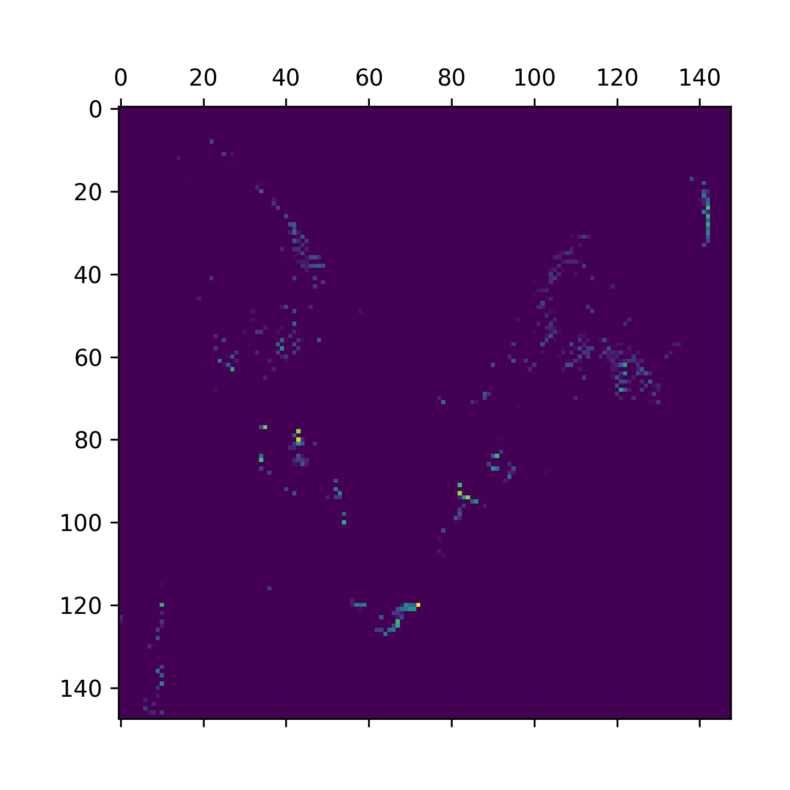
Figure 52: Channel 24
9.3.4. Channel 27
其中第27個channel的圖像為：
1: import matplotlib.pyplot as plt 2: # 秀出第3個頻導的特徵圖 3: plt.matshow(first_layer_activation[0, :, :, 27], cmap='viridis') 4: #plt.show() 5: plt.savefig('images/cat.1700.channel27.png', dpi=300)
Figure 53: Channel 27
9.3.5. 依序觀察每一層的結果
1: # 秀出第30個頻導的特徵圖 2: for i in range(32): 3: plt.matshow(first_layer_activation[0, :, :, i], cmap='viridis') 4: plt.title(f'channel: {i}') 5: plt.show() 6: #plt.savefig('images/cat.1700.channel10.png', dpi=300)
9.4. 各層的輸出結果
現在，我們來輸出這個CNN模型中每一層輪出的完整樣貌，我們從中提取、繪製每8個特徵圖(feature maps)中的通道，並將結果以類似matplotlib的subplot()呈現出來。
1: import keras 2: 3: # 輸出每一層的神經層名稱 4: layer_names = [] 5: for layer in model.layers[:8]: 6: layer_names.append(layer.name) 7: 8: images_per_row = 16 # 每一排輸出16個特徵圖 9: 10: # 每一層特徵圖的Shapes 11: # layer#01 -> (148, 148, 32) 12: # layer#02 -> (74, 74, 32) 13: # layer#03 -> (72, 72, 64) 14: # layer#04 -> (36, 36, 64) 15: # layer#05 -> (34, 34, 128) 16: # layer#06 -> (17, 17, 128) 17: # layer#07 -> (15, 15, 128) 18: # layer#08 -> (7, 7, 128) 19: 20: # 輸出特徵圖 21: for layer_name, layer_activation in zip(layer_names, activations): # 我們有8層的神經元的輸出 22: n_features = layer_activation.shape[-1] # 取得每一層特徵圖的數量 23: size = layer_activation.shape[1] # 取得每一個特徵圖的寬與高 (1, size, size, n_features) 24: 25: # 我們會把多個特徵圖串接在一個比較大的矩陣 26: n_cols = n_features // images_per_row # 算一下這個大矩陣的會有幾欄 27: display_grid = np.zeros((size * n_cols, images_per_row * size)) # 產生一個大矩陣 28: 29: # 模擬matpolotlib subplot()效果 30: for col in range(n_cols): 31: for row in range(images_per_row): 32: channel_image = layer_activation[0, :, :, col * images_per_row + row] 33: # Post-process the feature to make it visually palatable 34: channel_image -= channel_image.mean() 35: channel_image /= channel_image.std() 36: channel_image *= 64 37: channel_image += 128 38: channel_image = np.clip(channel_image, 0, 255).astype('uint8') 39: display_grid[col * size : (col + 1) * size, 40: row * size : (row + 1) * size] = channel_image 41: 42: # 展示拼貼出來的結果 43: scale = 1. / size 44: plt.figure(figsize=(scale * display_grid.shape[1], 45: scale * display_grid.shape[0])) 46: plt.title(layer_name) 47: plt.grid(False) 48: fn = layer_name+".png" 49: plt.imshow(display_grid, aspect='auto', cmap='viridis') 50: plt.savefig('images/'+fn, dpi=300) 51: #plt.show()
Figure 54: 經過第一個卷積層
Figure 55: max pooling轉換後
Figure 56: 經過第二個卷積層
Figure 57: 經過第二次max pooling
Figure 58: 經過第三個卷積層
Figure 59: 第三個max pooling
Figure 60: 第四個卷積層
Figure 61: 第四個max pooling
由上圖可知，隨層數越來越高，啟動函數的輸出變得越來越抽象，視覺上也越來越難解釋，model 開始編碼出更高階的概念。此外，啟動函數輸出的稀疏性也隨著層數的深度而增加，在第一層中，所有的過濾器都被輸入影響所驅動(都有值)，但接下來就有越來越多的 filter 的值是空的(全黑)，這表示在這些層的輸入影像中已經找不到過濾器要編碼的圖案 pattern 了。
上述示例也證明了深度神經網路所學習到的表示法有一個重要特性：各層萃取的特徵隨著層的𣶶度而變的越來越抽象，越高階的啟動函數越不會帶有關於特定輸入的資訊，卻具備更多關於目標的資訊（此例中指的是貓或狗）。這和人或動物感知世界的方式很像：在觀察一個場景幾秒中後閉眼，我們可以記得場景中有哪些抽象事物，但不會記得每個物體的特殊外觀，因為大腦也會將事物抽象化。